Audit digitale toegankelijkheid van website kixx.nl
Samenvatting
Wij hebben de website https://www.kixx.nl onderzocht in maart 2026. Op dit moment is een deel van de succescriteria als voldoende beoordeeld. In dit rapport lees je welke punten nog verbetering behoeven en hoe deze kunnen worden aangepakt.
De website heeft een sessie-timeout, waarna bezoekers moeten bevestigen dat ze een mens zijn. Er is geen mogelijkheid om de sessie te verlengen en er wordt geen waarschuwing gegeven.
Oplossing
Zorg ervoor dat bezoekers de mogelijkheid hebben om deze tijdslimiet uit te zetten, aan te passen of te verlengen.
In de header staan drie onzichtbare links zonder toegankelijke naam.
De link heeft geen toegankelijke naam. Daardoor is voor gebruikers van schermlezers niet duidelijk wat de functie of de bestemming van de link is. Ook is het linkdoel niet vast te stellen op basis van de beschikbare informatie. Dit hangt samen met succescriterium 2.4.4, omdat links een duidelijk doel moeten hebben.
Oplossing
Geef de link een toegankelijke naam. Dit kan bijvoorbeeld via een zichtbare linktekst, een aria-label of een andere geschikte techniek.
#3 - Kleurcontrast van tekst kleiner dan 24px en niet vetgedrukt is onvoldoende
Op alle pagina's wordt de combinatie van lichtblauw (#00AEAE) en wit gebruikt voor tekst en achtergrond. De contrastverhouding is te laag: 2,7:1. Dit komt voor in de cookiebanner bij de link "Details tonen"; in het mobiele menu, bijvoorbeeld bij links als "Nieuw"; op de pagina https://www.kixx.nl/over-ons/contact.html bij de link "Contact" en de knop "Verstuur"; op de pagina https://www.kixx.nl/zoeken/?q= bij links als "Meer kindermaten" en andere.
Oplossing
Omdat deze tekst kleiner is dan 24px en niet vetgedrukt, moet het contrast minimaal 4,5:1 zijn.
#4 - Kleurcontrast van tekst kleiner dan 24px en niet vetgedrukt is onvoldoende
Op alle pagina's staat witte tekst op een oranje (#E77223) achtergrond of andersom. Bijvoorbeeld in de header, naast de favorieten- en winkelwageniconen, zoals "0"; op de homepagina bij de knop "Inschrijven"; op de pagina https://www.kixx.nl/mijn-account/favorieten.html, bijvoorbeeld bij de link "Afrekenen" die verschijnt wanneer een product aan de winkelwagen wordt toegevoegd; op de pagina https://www.kixx.nl/mijn-account/inloggen.html, bijvoorbeeld bij "Inloggen" en andere. De contrastverhouding is te laag: 3,1:1.
Oplossing
Omdat deze tekst kleiner is dan 24px en niet vetgedrukt, moet het contrast minimaal 4,5:1 zijn.
#5 - Cookiebanner: Tekstalternatief logo onvolledig
Impact: GrootType: ContentWCAG: 1.1.1EN: 9.1.1.1
In de cookiebanner toont het logo de volledige tekst "kixx kinderkleding", maar de alt-tekst is alleen "logo".
Hierdoor is de informatie in het logo niet volledig beschikbaar voor bezoekers die de afbeelding niet kunnen waarnemen.
Oplossing
Zorg ervoor dat het tekstalternatief (alt-tekst) van het logo de volledige tekst bevat die in het logo zichtbaar is, namelijk "kixx kinderkleding".
#6 - Cookiebanner: de accordeon heeft geen koppen
Impact: GrootType: TechniekWCAG: 1.3.1EN: 9.1.3.1
In de cookiebanner, onder het tabblad "Details", staan secties met verborgen content. De elementen waarmee je deze secties kunt openen en sluiten zijn niet als kop gemarkeerd.
De teksten waarmee je delen van een accordeon kunt inklappen en uitklappen doen dienst als koppen voor die delen. Daarom moeten deze teksten ook de rol van kop hebben. Het gaat verkeerd als deze teksten niet in de code als kop zijn gemarkeerd met een h-element zoals h2 of h3.
Oplossing
Markeer deze teksten als kop of zorg dat de bestaande rol van kop niet wordt overschreven.
#7 - Cookiebanner: koppen zijn niet als kop gemarkeerd
Impact: MediumType: ContentWCAG: 1.3.1EN: 9.1.3.1
In de cookiebanner, in het tabblad "Details", staan in de secties met verborgen content koppen die niet als kop zijn gemarkeerd. Het strong-element wordt gebruikt om ze visueel op koppen te laten lijken. Zie bijvoorbeeld "sc-sticky-session" en andere.
Het strong-element is niet bedoeld om koppen mee te markeren. Deze elementen geven uitsluitend nadruk aan tekst en hebben geen semantische betekenis als kop.
Koppen worden gebruikt om de structuur van een tekst vast te leggen. Alleen wanneer koppen met een kop-element (h1 tot en met h6) zijn gemarkeerd, kan hulpsoftware deze structuur herkennen en correct interpreteren.
Oplossing
Verwijder het strong-element en markeer deze tekst met een passend kop-element, zoals h2 of h3. De visuele opmaak kan eventueel met CSS worden toegepast.
Dit type element wordt vaak toegevoegd via de knop "B" (vet) in een tekstbewerker.
#8 - Cookiebanner: schakelknoppen hebben onvoldoende contrast
In de cookiebanner, in het tabblad "Details", staan schakelknoppen (toggles). In de "aan"-status heeft de schakelknop een lichtblauwe achtergrond tegen een witte achtergrond. De contrastverhouding is 2,7:1. De rand helpt bezoekers om invoerelementen te herkennen. Als het contrast onvoldoende is, zijn deze elementen moeilijk te onderscheiden van de rest van de pagina.
Een vergelijkbaar probleem is zichtbaar bij de witte schakelcirkel tegen de blauwe achtergrond in de "aan"-status.
Oplossing
Zorg ervoor dat de contrastverhouding tussen de achtergrond van de schakelknop en de achtergrond van het dialoogvenster minimaal 3,0:1 is. Dezelfde contrastverhouding geldt voor de schakelcirkel ten opzichte van de achtergrond van de schakelknop.
#9 - Cookiebanner: zichtbare linktekst ontbreekt in toegankelijke naam
Impact: GrootType: TechniekWCAG: 2.5.3EN: 9.2.5.3
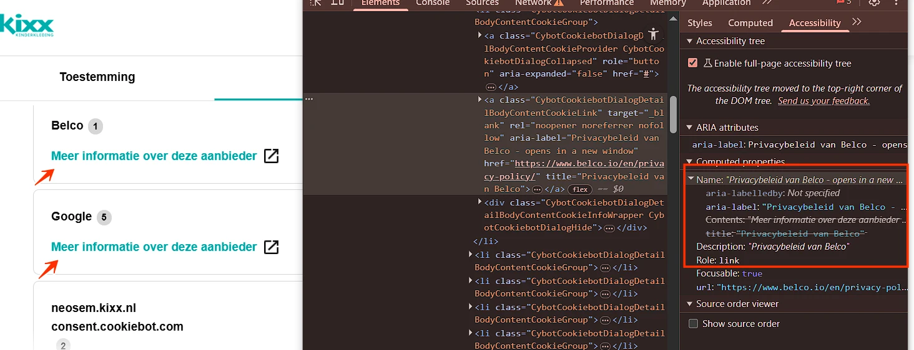
In de cookiebanner, in het tabblad "Details", staan links met de zichtbare tekst "Meer informatie over deze aanbieder", maar de toegankelijke naam is bijvoorbeeld "Privacybeleid van Belco - opens in a new window" (afkomstig uit het aria-label).
De zichtbare tekst van de link komt niet voor in de toegankelijke naam. Daardoor kan de link niet worden bediend met spraakbediening. De uitgesproken commando's komen niet overeen met de toegankelijke naam van de link en activeren de link niet.
Oplossing
Zorg ervoor dat de zichtbare tekst van de link voorkomt in de toegankelijke naam, bij voorkeur aan het begin. Pas in dit geval het aria-label aan zodat de zichtbare tekst daarin wordt opgenomen, bijvoorbeeld: aria-label="Meer informatie over deze aanbieder – Privacybeleid van Belco - opent in een nieuw venster".
#10 - Focusindicator is niet zichtbaar
Impact: GrootType: TechniekWCAG: 2.4.7EN: 9.2.4.7
Op alle pagina's van deze website is de standaard toetsenbordfocusstijl verwijderd van interactieve elementen en zijn er geen aangepaste focusindicatoren als alternatief aangeboden.
Bijvoorbeeld: in de cookiebanner wordt de toetsenbordfocus aangegeven door een lichtblauwe (#00AEAE) rand op een witte achtergrond. De contrastverhouding is laag: 2,7:1.
De toetsenbordfocus moet altijd zichtbaar zijn op interactieve elementen zoals links, knoppen en invoervelden die met het toetsenbord focus kunnen krijgen. Bezoekers die met het toetsenbord navigeren moeten goed kunnen zien op welke plek van de pagina zij zich bevinden.
In de header staat een zoekveld. De achtergrondkleur van het veld is lichtgrijs (#E6E4DE) op een witte achtergrond. De contrastverhouding is te laag: 1,3:1.
Dit invoerveld heeft een placeholdertekst "Waar ben je naar op zoek?". De grijze (#877B78) placeholdertekst tegen de lichtgrijze (#E6E4DE) achtergrond heeft een contrastverhouding van 3,2:1, wat ook te laag is.
Oplossing
De achtergrond van invoerveld moet minimaal een contrast van 3,0:1 hebben met de achtergrond van de pagina.
Zorg ervoor dat de placeholdertekst een contrast van minimaal 4,5:1 heeft ten opzichte van de achtergrond.
#12 - Nieuwsbriefformulier: autocomplete-attribuut ontbreekt bij invoervelden voor persoonsgegevens
In de footer staat een formulier met een invoerveld voor persoonlijke informatie (e-mailadres) zonder het autocomplete-attribuut.
Invoervelden voor persoonlijke informatie, zoals achternaam, e-mailadres of telefoonnummer, moeten het autocomplete-attribuut bevatten. Dit stelt browsers en hulpsoftware in staat om gebruikers te ondersteunen, bijvoorbeeld door relevante velden automatisch in te vullen.
Oplossing
Gebruik het autocomplete-attribuut voor alle velden waarin persoonsgegevens moeten worden ingevuld. Meer informatie over autocomplete en welke waarden je verplicht moet gebruiken: https://www.w3.org/Translations/WCAG22-nl/#input-purposes.
#13 - Nieuwsbriefformulier: onvoldoende kleurcontrast van tekst
In de footer staat een formulier met een invoerveld "E-mailadres". Wanneer een leeg formulier wordt verzonden, verschijnt een foutmelding met rode (#E6575A) tekst op een lichtrode (#FFDEDD) achtergrond, bijvoorbeeld "Het veld 'e-mailadres' is een verplicht veld. Vul dit veld alsnog in". De contrastverhouding is te laag: 2,9:1.
Oplossing
Omdat deze tekst kleiner is dan 24px en niet vetgedrukt, moet het contrast minimaal 4,5:1 zijn.
#14 - Nieuwsbriefformulier: onvoldoende kleurcontrast van informatieve elementen
In de footer staat een e-mailveld met een asterisk. De oranje (#ED8037) asterisk heeft onvoldoende kleurcontrast ten opzichte van de witte veldachtergrond: 2,7:1. Dit is lager dan de vereiste 3,0:1 voor grafische elementen die informatie overbrengen.
Het kleurcontrast van informatieve elementen moet minimaal 3,0:1 zijn.
Oplossing
Zorg dat deze informatieve elementen voldoende contrast hebben.
#15 - Footer: alternatieve tekst van informatieve afbeelding is niet betekenisvol
In de footer staan logo's van sociale media die als link functioneren, maar deze logo's hebben allemaal dezelfde niet-beschrijvende alt-tekst "Kixx.nl" en daardoor dezelfde toegankelijke linknaam. Het doel van de links is onduidelijk (2.4.4).
Er is geprobeerd om de links toegankelijk te maken door een title-attribuut toe te voegen, bijvoorbeeld "Facebook", maar dit is een onbetrouwbare methode en niet alle schermlezers lezen de inhoud ervan voor.
Wanneer een afbeelding informatie overbrengt, moet de alternatieve tekst die informatie volledig en betekenisvol beschrijven. In dit geval wordt de visueel aangeboden informatie niet overgebracht aan gebruikers van schermlezers.
Oplossing
De beste oplossing is om de alt-tekst aan te passen, bijvoorbeeld naar "Volg ons op Facebook" enzovoort.
#16 - Footer: kop niet gemarkeerd als kop
Impact: MediumType: ContentWCAG: 1.3.1EN: 9.1.3.1
In de footer zijn de volgende teksten niet als kop gemarkeerd: "Klantenservice", "Kixx" en andere.
Voor bezoekers die hulpsoftware gebruiken, is tekst die visueel als kop is vormgegeven maar niet als kop is gemarkeerd in de code niet bruikbaar. Deze bezoekers navigeren via koppen om de inhoud te scannen of snel naar een specifieke sectie te gaan. Dit is alleen mogelijk wanneer koppen ook in de code als kop zijn vastgelegd. Wanneer koppen uitsluitend visueel zijn vormgegeven, bijvoorbeeld door vetgedrukte tekst, wijkt de informatiestructuur in de code af van de visuele structuur van de pagina.
Oplossing
Markeer koppen met het juiste HTML-element en gebruik daarbij het correcte kopniveau (h1 tot en met h6).
In de footer staat een logo dat als link functioneert met de zichtbare tekst "Webwinkel KEUR", maar de alt-tekst is "Webshop Trustmark".
Hierdoor is de informatie in het logo niet volledig beschikbaar voor bezoekers die de afbeelding niet kunnen waarnemen.
De toegankelijke naam van de link komt daarmee niet overeen met de zichtbare tekst in het logo (2.5.3). Daardoor kan de link niet correct worden geactiveerd met spraakbediening, omdat bezoekers de zichtbare tekst uitspreken terwijl de toegankelijke naam afwijkt.
Oplossing
Zorg ervoor dat het tekstalternatief (alt-tekst) van het logo de volledige tekst bevat die in het logo zichtbaar is, namelijk "Webwinkel KEUR".
Zorg ervoor dat de zichtbare tekst van de link voorkomt in de toegankelijke naam, bij voorkeur aan het begin.
#18 - Footer: onjuiste taal van toegankelijke namen
Impact: GrootType: TechniekWCAG: 3.1.2EN: 9.3.1.2
In de footer staat een logo met de tekst "Webwinkel KEUR" dat als link functioneert. De alt-tekst van het logo en de toegankelijke naam van de link, "Webshop Trustmark", is in het Engels.
Schermlezers lezen deze labels voor volgens de uitspraakregels van de primaire taal van de pagina, in dit geval Nederlands. Daardoor kan dit leiden tot verwarring en verminderde begrijpelijkheid voor gebruikers die schermlezers gebruiken.
Oplossing
Voeg een lokaal lang-attribuut toe. Een betere oplossing is het vertalen deze tekst naar het Nederlands, zodat schermlezers de tekst correct kunnen voorlezen.
Op alle pagina's ontbreekt een oplossing om blokken herhalende content in de header over te slaan. Er is geen skiplink.
Daardoor moeten gebruikers van een schermlezer bij elk paginabezoek dezelfde terugkerende onderdelen doorlopen voordat zij de hoofdinhoud bereiken.
Oplossing
Zorg ervoor dat gebruikers vaste onderdelen van de pagina kunnen overslaan en direct naar de hoofdinhoud kunnen gaan. De beste oplossing is een skiplink
Een skiplink die bij gebruik de toetsenbordfocus naar de hoofdinhoud verplaatst; het duidelijk afbakenen van paginadelen, zoals navigatie en hoofdinhoud; een consistente en correcte koppenstructuur die op elke pagina wordt toegepast.
Een skiplink moet de eerste link op de pagina zijn. Deze mag standaard verborgen zijn, maar moet zichtbaar worden zodra de skiplink toetsenbordfocus krijgt.
#20 - Hoofdmenu: onzichtbaar element krijgt toetsenbordfocus
Impact: GrootType: TechniekWCAG: 2.4.3EN: 9.2.4.3
De toetsenbordfocus komt terecht op onzichtbare interactieve elementen na de hoofdmenulink "Shop the look".
De toetsenbordfocus mag echter niet terechtkomen op onzichtbare interactieve elementen . Als dat wel gebeurt, kan een bezoeker deze onbedoeld activeren en raakt de navigatie onvoorspelbaar.
Oplossing
Zorg ervoor dat alleen zichtbare elementen toetsenbordfocus kunnen krijgen en dat de focusvolgorde logisch en voorspelbaar blijft.
#21 - Hoofdmenu: informatie is niet meer leesbaar als tekstafstand wordt aangepast
Op deze pagina wordt de tekst in de header gedeeltelijk onzichtbaar en onleesbaar wanneer bezoekers de tekstafstand aanpassen zoals beschreven in dit succescriterium, bijvoorbeeld "9 van 10 op Webwinkelkeur" en andere teksten.
Sommige bezoekers passen de weergave van de tekst aan, zodat zij de tekst beter kunnen lezen. Denk aan het vergroten van de afstand tussen regels, letters of woorden. Het gaat bijvoorbeeld om mensen met dyslexie. Als een bezoeker dit doet op de manier die in succescriterium 1.4.12 is beschreven, moet alles goed blijven werken. Bovendien moet de tekst leesbaar blijven.
Oplossing
Je lost dit op door de hoogte en breedte van de containers van de tekst responsief te maken.
#22 - Hoofdmenu: onvoldoende linktekst om de bestemming van de link te kunnen bepalen
In de header staan vier links met iconen. De links met de "Like"- en "Winkelwagen"-iconen hebben als toegankelijke naam "0", wat het doel van de link niet beschrijft.
Er is geprobeerd om de links toegankelijk te maken door een title-attribuut toe te voegen, maar dit is een onbetrouwbare methode en niet alle schermlezers lezen de inhoud ervan voor.
Als bezoekers met de muis over een menu-item bewegen, zoals "Kinderkleding", verschijnt er een submenu dat de pagina-inhoud overlapt. Bezoekers moeten deze extra content makkelijk kunnen sluiten zonder de muis te verplaatsen of de focus te verplaatsen, bijvoorbeeld door op Escape te drukken. Zonder deze mogelijkheid kan de extra content de onderliggende pagina-inhoud blokkeren, wat vooral vervelend is voor bezoekers die een vergroot scherm gebruiken.
Oplossing
De extra content (submenu) moet sluitbaar zijn zonder dat de muis of de toetsenbordfocus verplaatst hoeft te worden, bijvoorbeeld via de Escape-toets.
Pseudocodeplan (JavaScript):
Selecteer alle menu-items met submenu's ([aria-haspopup="true"] of .has-submenu). Voeg event listeners toe: focus → open submenu; blur → optioneel sluiten na korte vertraging; keydown → als Escape wordt gedrukt → sluit submenu. Sluit submenu-functie: verwijder .open-class of zet aria-expanded="false"; verberg submenu (display: none of hidden); zet focus terug naar het parent menu-item.
Als bezoekers met de muis over een menu-item bewegen, zoals "Kinderkleding", verschijnt er een submenu. Deze interactie is niet beschikbaar via het toetsenbord.
Oplossing
Dit is slechts een advies omdat alle informatie uit de submenu's op de pagina's aanwezig is waar de submenu's naar verwijzen. Je maakt de website toegankelijker en gebruiksvriendelijker voor iedereen als je het mogelijk maakt om de submenu's met het toetsenbord bedienbaar te maken. Dezelfde functionaliteit moet beschikbaar zijn zonder muis.
Belangrijk: wanneer je de submenu's toegankelijk maakt via het toetsenbord, moet je de aanwezigheid van deze submenu's bekendmaken aan hulpsoftware.
Als er een element is dat extra content kan tonen of verbergen, dan moet hulpsoftware de staat van deze content (zichtbaar of verborgen) kunnen bepalen. Deze informatie ontbreekt.
Gebruik het aria-expanded-attribuut op de link die extra content opent.
#25 - Hoofdmenu: kop niet gemarkeerd als kop
Impact: MediumType: ContentWCAG: 1.3.1EN: 9.1.3.1
De hoofdmenulinks, zoals "Kinderkleding", openen submenu's. In deze submenu's zijn de volgende teksten niet als kop gemarkeerd: "Categorieën", "Trending" en andere.
Voor bezoekers die hulpsoftware gebruiken, is tekst die visueel als kop is vormgegeven maar niet als kop is gemarkeerd in de code niet bruikbaar. Deze bezoekers navigeren via koppen om de inhoud te scannen of snel naar een specifieke sectie te gaan. Dit is alleen mogelijk wanneer koppen ook in de code als kop zijn vastgelegd. Wanneer koppen uitsluitend visueel zijn vormgegeven, bijvoorbeeld door vetgedrukte tekst, wijkt de informatiestructuur in de code af van de visuele structuur van de pagina.
Oplossing
Markeer koppen met het juiste HTML-element en gebruik daarbij het correcte kopniveau (h2 tot en met h6).
#26 - Mobiel menu: status menuknop ontbreekt
Impact: GrootType: TechniekWCAG: 4.1.2EN: 9.4.1.2
Op een klein scherm verschijnt een menuknop om het mobiele navigatiemenu te openen. De knop geeft geen informatie over de status van het menu (open of gesloten) aan bezoekers die het niet kunnen zien, zoals gebruikers van schermlezers.
Dit kan bijvoorbeeld opgelost worden door een tekstuele uitleg (ingeklapt/uitgeklapt) toe te voegen die voor ziende bezoekers met CSS wordt verborgen. Een andere optie is om het aria-expanded-attribuut te gebruiken op de menuknop. Dit attribuut moet de waarde "true" krijgen als het menu getoond wordt, en "false" als het menu verborgen is.
Oplossing
Zorg ervoor dat de status van het menu ook in de code beschikbaar is. Gebruik hiervoor bijvoorbeeld het aria-expanded-attribuut op de menuknop. Zet dit attribuut op "true" wanneer het menu is geopend en op "false" wanneer het menu is gesloten.
Op kleine schermen bevat het geopende mobiele menu een link met een "x"-icoon. Dit icoon heeft geen tekstalternatief. Wanneer een link alleen uit een afbeelding bestaat, moet de alternatieve tekst van de afbeelding de functie van de link beschrijven.
Dit hangt ook samen met succescriterium 4.1.2, omdat de link geen toegankelijke naam heeft.
Oplossing
Voeg een tekstalternatief toe dat de functie van de link beschrijft. Dit kan door een tekstalternatief bij het icoon te gebruiken of door een aria-label toe te voegen aan de link.
#28 - Mobiel menu: focusvolgorde submenu is onjuist
Impact: GrootType: TechniekWCAG: 2.4.3EN: 9.2.4.3
Bij het inzoomen verschijnt in de header een menuknop die het mobiele menu opent. De toetsenbordfocus gaat eerst naar andere elementen voordat de submenu-items worden bereikt. Dit is geen logische focusvolgorde. De toetsenbordfocus moet direct naar het submenu gaan. Hierdoor komt de toetsenbordfocus terecht op onzichtbare elementen.
Daarnaast kunnen bezoekers momenteel met het toetsenbord uit het mobiele menu navigeren. De toetsenbordfocus verschuift dan naar de onderliggende pagina terwijl het menu open blijft.
Bij dit soort menu's moet de toetsenbordfocus goed worden ingesteld. Wanneer het menu actief is, moet de focus binnen het menu blijven en mag deze niet op de onderliggende pagina terechtkomen. Dit kan worden opgelost door de focus binnen het menu te houden, totdat de bezoeker op de sluitknop heeft geklikt of op de ESC-toets heeft gedrukt. Het is ook mogelijk om het menu automatisch te sluiten zodra de toetsenbordfocus eruit gaat.
Oplossing
Zorg ervoor dat de toetsenbordfocus direct naar de submenu-items verplaatst op het moment dat een submenu wordt geopend.
Zorg ervoor dat de toetsenbordfocus binnen het mobiele menu blijft zolang het menu geopend is. Dit kan bijvoorbeeld door:
de focus binnen het menu te houden totdat het menu wordt gesloten (via een sluitknop of de ESC-toets); het menu automatisch te sluiten wanneer de toetsenbordfocus het menu verlaat.
#29 - Mobiel menu: elementen die toetsenbordfocus krijgen zijn bedekt door een mobiel menu
Op een klein scherm, in de header, staat een knop met drie horizontale lijnen waarmee een zijmenu wordt geopend. Wanneer dit menu is geopend, bedekt het menu de interactieve elementen op de onderliggende pagina. Deze elementen kunnen nog steeds toetsenbordfocus krijgen, terwijl ze niet zichtbaar zijn. Elementen die toetsenbordfocus krijgen, moeten altijd zichtbaar zijn, omdat dit anders verwarrend kan zijn voor bezoekers die met het toetsenbord navigeren.
Oplossing
Zorg ervoor dat de toetsenbordfocus binnen het menu blijft totdat het menu wordt gesloten via de sluitknop of door het indrukken van de ESC-toets. Een andere mogelijkheid is dat het menu automatisch sluit zodra de focus het menu verlaat. Onderliggende interactieve elementen mogen geen toetsenbordfocus krijgen zolang het menu is geopend.
#30 - Elementen die toetsenbordfocus krijgen zijn bedekt
Wanneer de website wordt verkleind naar een lagere resolutie, bedekt een sticky header een deel van de pagina-inhoud. Interactieve elementen zoals links in de footer "Contact" krijgen nog steeds toetsenbordfocus, maar de focusindicator is verborgen achter de sticky header.
Hierdoor kunnen bezoekers die met het toetsenbord navigeren niet zien waar de toetsenbordfocus zich bevindt.
Oplossing
Zorg ervoor dat de sticky header of footer geen interactieve elementen of hun focusindicatoren bedekt. Je kunt hiervoor bijvoorbeeld de z-index aanpassen, elementen herpositioneren of de header/footer dynamisch verkleinen op kleinere schermen.
#31 - Hoofdmenu: decoratieve afbeelding is niet verborgen voor schermlezers
Impact: MediumType: ContentWCAG: 1.1.1EN: 9.1.1.1
Hoofdmenulinks zoals "Kinderkleding", "Meisjes" en andere openen submenu's. Deze submenu's bevatten decoratieve afbeeldingen met de alt-tekst "Banner".
Onder de kop "Ontvang 10% korting op je eerste bestelling!" staat een formulier met invoervelden voor persoonlijke informatie ("Voornaam" en "E-mailadres") zonder het autocomplete-attribuut.
Invoervelden voor persoonlijke informatie, zoals achternaam, e-mailadres of telefoonnummer, moeten het autocomplete-attribuut bevatten. Dit stelt browsers en hulpsoftware in staat om gebruikers te ondersteunen, bijvoorbeeld door relevante velden automatisch in te vullen.
Gebruik het autocomplete-attribuut voor alle velden waarin persoonsgegevens moeten worden ingevuld. Meer informatie over autocomplete en welke waarden je verplicht moet gebruiken: https://www.w3.org/Translations/WCAG22-nl/#input-purposes.
#33 - Inschrijfformulier: placeholdertekst wordt gebruikt als label voor een invoerveld
Onder de kop "Ontvang 10% korting op je eerste bestelling!" staan invoervelden met placeholderteksten "Voornaam" en "E-mailadres". Deze velden hebben echter geen permanent label; de placeholdertekst wordt als label gebruikt.
Invoervelden moeten een label hebben dat altijd zichtbaar is. Je kunt hier dus niet een placeholder-tekst voor gebruiken, want die verdwijnt zodra de bezoeker begint te typen.
Oplossing
Voeg een permanent zichtbaar label toe bij het invoerveld.
#34 - Inschrijfformulier: betekenis van verplicht-symbool niet uitgelegd
Onder de kop "Ontvang 10% korting op je eerste bestelling!" is het invoerveld "E-mailadres" gemarkeerd met een asterisk.
Wanneer een asterisk wordt gebruikt om verplichte velden aan te geven, moet er boven het formulier een instructie staan zoals "Velden gemarkeerd met * zijn verplicht".
Dit hangt ook samen met succescriterium 1.3.1, omdat er in de code geen informatie over verplichte velden beschikbaar is.
Onder de kop "Ontvang 10% korting op je eerste bestelling!" staat een formulier. Wanneer een leeg formulier wordt verzonden, verschijnt een foutmelding met rode (#E6575A) tekst op een lichtrode (#FFDEDD) achtergrond, bijvoorbeeld "Het veld 'e-mailadres' is een verplicht veld. Vul dit veld alsnog in". De contrastverhouding is te laag: 2,9:1.
Omdat deze tekst kleiner is dan 24px en niet vetgedrukt, moet het contrast minimaal 4,5:1 zijn.
#36 - Alternatieve tekst zorgt voor herhaling van tekst
Impact: MediumType: ContentWCAG: 1.1.1EN: 9.1.1.1
Onder de kop "Nieuw seizoen, nieuwe outfit! Ontdek de voorjaarscollectie" staan afbeeldingen. De alternatieve tekst van de afbeeldingen herhaalt de tekst naast de afbeeldingen, bijvoorbeeld "t-shirts".
De schermlezer leest nu dezelfde informatie twee keer voor.
Dit probleem komt ook voor bij bijvoorbeeld "T-shirts & sweaters met backprint".
Oplossing
Laat het alt-attribuut leeg om herhaling van de tekst te voorkomen (alt="").
#37 - Onjuist gebruik van een kopelement
Impact: MediumType: ContentWCAG: 1.3.1EN: 9.1.3.1
Onder de kop "Nieuw seizoen, nieuwe outfit! Ontdek de voorjaarscollectie" staan links die bestaan uit een afbeelding en een tekst die als kop is gemarkeerd. Deze tekst is echter geen kop, maar is onjuist gemarkeerd met een h3-element om de lettergrootte te vergroten. Het gaat bijvoorbeeld om teksten als "t-shirts" en "Ontdek de collectie voor kleine dromers".
De gemarkeerde tekst introduceert geen inhoud en functioneert daardoor niet als kop. Door het gebruik van het <h3>-element krijgt de tekst onterecht deze betekenis.
Het kop-element (h3) is niet betekenisvol gebruikt, maar om een visueel effect te creëren. De tekst die als kop is gemarkeerd, is inhoudelijk geen kop, omdat er geen onderliggende inhoud volgt. Kop-elementen zijn bedoeld om structuur aan te brengen in de informatie op een pagina. Gebruikers van schermlezers vertrouwen op koppen om te navigeren en de opbouw van de pagina te begrijpen. Kop-elementen zijn daarom niet bedoeld voor uitsluitend visuele opmaak.
Oplossing
Verwijder het <h3>-element en gebruik een ander passend element, zoals een <p>-element. De gewenste visuele stijl kan vervolgens met CSS worden toegepast.
Onder de kop "Nieuw seizoen, nieuwe outfit! Ontdek de voorjaarscollectie" staan artikelen met afbeeldingen en tekst. De volgorde van HTML-elementen binnen de artikelen is niet logisch: afbeeldingen staan boven koppen. De huidige volgorde is afbeelding, kop, tekst.
Wanneer een schermlezer de inhoud van boven naar beneden voorleest, is niet duidelijk welke afbeeldingen en teksten bij welk artikel horen. De kop staat in de code niet bovenaan en vormt daardoor geen herkenbaar beginpunt. Dit kan verwarrend zijn voor gebruikers van een schermlezer.
Oplossing
Als de afbeelding decoratief is, zorg er dan voor dat deze niet wordt voorgelezen door hulpsoftware. Dit kan meestal door het leeglaten van het alt-attribuut.
Als de afbeelding informatief is, pas dan de volgorde van de HTML-elementen aan, zodat de kop bovenaan staat. De visuele volgorde kan met CSS hetzelfde blijven.
#39 - Onduidelijke linktekst
Impact: MediumType: ContentWCAG: 2.4.4EN: 9.2.4.4
Onder de kop "Nieuw seizoen, nieuwe outfit! Ontdek de voorjaarscollectie" bevatten meerdere links de niet-informatieve tekst "Shop nu". Deze tekst beschrijft de bestemming van de link onvoldoende, wat onduidelijkheid veroorzaakt, vooral voor gebruikers met cognitieve beperkingen of gebruikers van schermlezers.
Meerdere links op deze pagina hebben dezelfde, nietszeggende linktekst. Daardoor is op basis van de linktekst niet duidelijk waar de link naartoe leidt. Dit maakt het lastig om links van elkaar te onderscheiden, met name voor gebruikers van een schermlezer die links buiten de context bekijken.
Oplossing
Zorg ervoor dat de linktekst het doel van de link duidelijk beschrijft. Dit kan bijvoorbeeld door een algemene tekst zoals 'Shop nu' aan te vullen met extra context.
Als visueel duidelijk is waar de link bij hoort, kan deze aanvullende tekst visueel worden verborgen. Bijvoorbeeld: 'Shop nu (Nieuwe collectie zomerjassen)'.
Er staat een lichtblauwe (#00AEAE) koptekst "Kixx" op een lichtgrijze (#F8F8F8) achtergrond. De contrastverhouding is te laag: 2,6:1.
Oplossing
Omdat deze tekst groter is dan 24px, moet het contrast minimaal 3,0:1 zijn.
Dit probleem komt ook voor bij de knop "Lees meer" verderop. Omdat die tekst kleiner is dan 24 pixels en niet vetgedrukt, moet de contrastverhouding daar minimaal 4,5:1 zijn.
#41 - Verborgen content is beschikbaar voor hulpsoftware
In de sectie "Kixx" staat een knop met de tekst "Lees meer". Deze knop wordt gebruikt om extra content te tonen. De content is echter visueel verborgen maar blijft wel toegankelijk voor hulpsoftware. Daardoor kunnen gebruikers van schermlezers de verborgen content lezen zonder de knop te activeren. Dit maakt de aanwezigheid van de "Lees meer"-knop verwarrend.
Oplossing
Zorg ervoor dat content die visueel verborgen is, ook programmatisch verborgen is voor hulpsoftware totdat deze zichtbaar wordt gemaakt. Dit kan bijvoorbeeld met aria-hidden="true". Verwijder dit attribuut wanneer de content zichtbaar wordt.
#42 - Toetsenbordbediening ontbreekt
Impact: GrootType: TechniekWCAG: 2.1.1EN: 9.2.1.1
In de sectie "Kixx" staat een knop met de tekst "Lees meer". Deze knop is niet bereikbaar met het toetsenbord.
Oplossing
Zorg ervoor dat de knop zowel met de spatiebalk als de Enter-toets kan worden bediend.
Onder de kop "Contact" staat een formulier. De contrastverhouding tussen de lichtgrijze (#E6E6E6) randen van de invoervelden en de witte achtergrond van de pagina is 1,2:1.
Oplossing
De randen van interactieve elementen zoals invoervelden moeten minimaal een contrast van 3,0:1 hebben met de achtergrond.
#44 - Interactief element heeft geen juiste rol
Impact: GrootType: TechniekWCAG: 4.1.2EN: 9.4.1.2
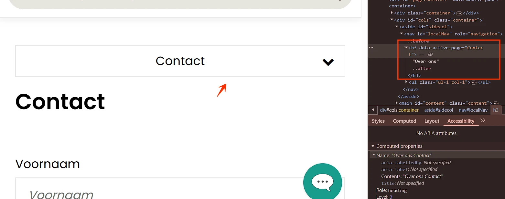
Op kleine schermen klapt het interactieve element met de zichtbare tekst "Contact" een lijst met links in en uit. In de code is dit element echter als kop (h3) gemarkeerd in plaats van als interactief element. Daardoor wordt het niet als knop herkend en wordt de in- of uitgeklapte status niet doorgegeven aan hulpsoftware.
De teksten die onderdelen van een sectie in- of uitklappen functioneren als knoppen en moeten daarom correct zijn gemarkeerd.
Het element "Contact" functioneert als interactief element dat content in- en uitklapt, maar is als kop (h3) gemarkeerd. Vervang de kop door een semantisch <button>-element, zodat het correct als interactief element wordt herkend.
Voor bezoekers die de pagina kunnen zien, is het duidelijk of een sectie in- of uitgeklapt is. Voor gebruikers van schermlezers moet deze status ook programmatisch beschikbaar zijn. Dit kan worden bereikt door het aria-expanded-attribuut toe te passen op de knop en de waarde dynamisch bij te werken wanneer de sectie wordt geopend of gesloten.
Andere oplossingen zijn ook mogelijk.
#45 - Bezoekers die inzoomen tot 200% kunnen niet meer alle functies gebruiken
Impact: GrootType: TechniekWCAG: 1.4.4EN: 9.1.4.4
Wanneer de pagina wordt bekeken op een schermresolutie van 1280 bij 1024 pixels en ingezoomd tot 200%, zijn de breadcrumbs niet zichtbaar.
#46 - Knoppen in accordeons hebben onjuiste interactieve rol
Impact: GrootType: TechniekWCAG: 4.1.2EN: 9.4.1.2
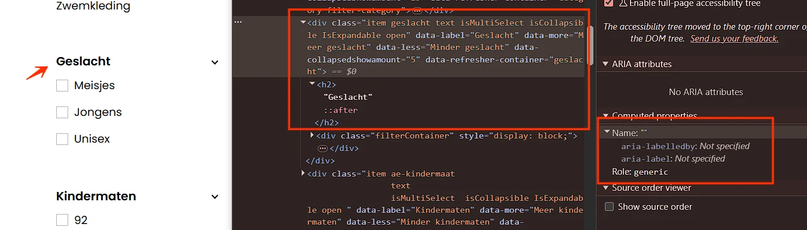
In de zijbalk, in secties met verborgen content, missen de elementen waarmee je de content kunt openen en sluiten de rol van knop, bijvoorbeeld "Geslacht".
De teksten die onderdelen van een accordeon in- of uitklappen functioneren als knoppen en moeten daarom correct zijn gemarkeerd.
Gebruik een kop-element met daarbinnen een button-element, bijvoorbeeld: <h2><button>Titel van de sectie</button></h2>.
#47 - Accordeon kan niet met het toetsenbord worden bediend
Impact: GrootType: TechniekWCAG: 2.1.1EN: 9.2.1.1
In de zijbalk zijn accordeoncomponenten aanwezig, bijvoorbeeld "Geslacht", maar deze zijn niet bereikbaar met het toetsenbord. Dit probleem komt ook voor op het kleine scherm bij de filters.
Sommige bezoekers gebruiken alleen een toetsenbord om te navigeren en geen muis. Zij moeten alle klikbare onderdelen van de website gewoon kunnen gebruiken. Daaronder vallen bijvoorbeeld links, knoppen, formulieren, keuzelijsten, tabbladen, sliders en accordeons.
Zorg dat alles wat aanklikbaar is, ook werkt met het toetsenbord.
#48 - Opsomming onjuist gemarkeerd
Impact: MediumType: ContentWCAG: 1.3.1EN: 9.1.3.1
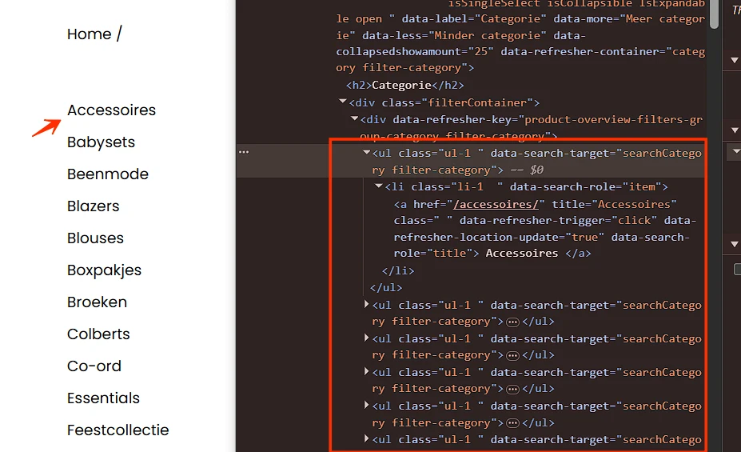
In de zijbalk staat een lijst met links, maar elke link is als apart <ul>-element gemarkeerd. De juiste opmaak ontbreekt.
Daardoor is de structuur van de informatie niet correct vastgelegd en kan hulpsoftware niet herkennen dat het om een opsomming gaat. Schermlezers kondigen in dat geval niet aan hoeveel items een lijst bevat. Dit maakt het voor gebruikers van een schermlezer lastiger om de hoeveelheid informatie in te schatten.
Zorg ervoor dat alle opsommingen correct worden gemarkeerd in de HTML-structuur, bijvoorbeeld met een <ol>-element (genummerde lijst) of <ul>-element (opsomming met opsommingstekens). Gebruik bij geneste opsommingen een lijst binnen het bijbehorende <li>-element.
Meer informatie over het belang van correcte HTML-lijsten is te vinden op: https://www.properaccess.nl/blog/waarom-correcte-html-lijsten-het-verschil-maken-in-toegankelijkheid/.
#50 - Dezelfde linktekst, verschillende bestemming
Impact: MediumType: ContentWCAG: 2.4.4EN: 9.2.4.4
Er staan veel links met harticonen. Deze links hebben dezelfde toegankelijke naam: "Aan favorieten toevoegen", maar het doel van elke link is anders.
Daardoor is op basis van de linktekst niet te bepalen waar een link naartoe leidt. Dit kan verwarrend zijn voor bezoekers, met name voor gebruikers van een schermlezer die links los van hun context bekijken.
De afgeprijsde prijs wordt weergegeven in rood (#E04B4B) op een witte achtergrond, of andersom, bijvoorbeeld "91.00". De contrastverhouding is te laag: 4:1.
Omdat deze tekst kleiner is dan 24px en niet vetgedrukt, moet het contrast minimaal 4,5:1 zijn.
#52 - Hovercontent ontoegankelijk
Impact: GrootType: TechniekWCAG: 2.1.1EN: 9.2.1.1
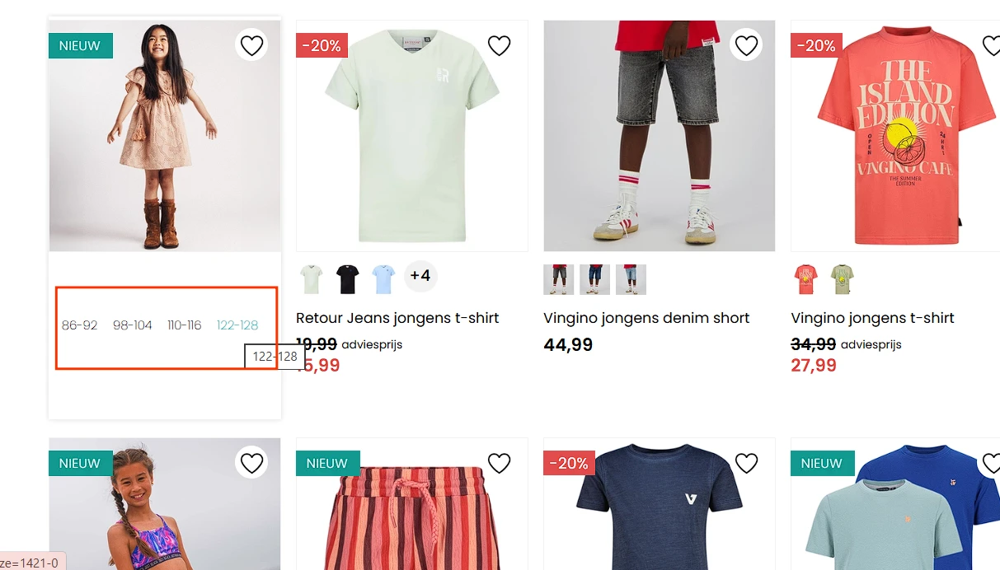
Op deze pagina tonen productartikelen extra content met kledingmaten bij hover, maar deze functionaliteit is niet beschikbaar voor toetsenbordgebruikers.
De knop toont extra content bij hover met de muis. Deze interactie is niet beschikbaar via het toetsenbord. Daardoor is de extra content niet toegankelijk voor bezoekers die geen muis gebruiken.
Onder sommige producten staan links met afbeeldingen van dat product in een andere kleur. Zie bijvoorbeeld "Retour Jeans jongens t-shirt". Deze afbeeldingen hebben geen alt-attribuut.
Een img-element moet altijd een alt-attribuut hebben. Bij een informatieve afbeelding voeg je een duidelijke beschrijving van de afbeelding toe.
Dit hangt ook samen met succescriterium 4.1.2, omdat de link geen toegankelijke naam heeft, en met succescriterium 2.4.4, omdat het doel van de link niet duidelijk is.
Voeg een alt-attribuut toe aan het img-element met een betekenisvolle tekst die de bestemming van de link beschrijft.
#54 - Aantal items in favorieten wordt niet tijdig voorgelezen door schermlezers
Impact: GrootType: TechniekWCAG: 4.1.3EN: 9.4.1.3
Op deze pagina toont een harticoon (favorieten) bovenaan een telling van toegevoegde producten. Deze telling is een statusbericht dat automatisch moet worden voorgelezen door schermlezers wanneer het verandert. De benodigde code om dit mogelijk te maken ontbreekt echter.
Statusberichten moeten automatisch voorgelezen worden door schermlezers zodra ze verschijnen of veranderen. Voeg hiervoor het aria-live-attribuut aan de melding toe. Zorg dat de tekst duidelijk is, bijvoorbeeld "XX artikelen in favorieten".
Zorg ervoor dat meldingen zoals deze worden voorgelezen als statusberichten. Schermlezers moeten ze automatisch voorlezen zonder dat de gebruiker ernaartoe hoeft te navigeren. Dit kan door role="status" aan het element van de melding toe te voegen. Meer informatie is te vinden op: https://www.w3.org/WAI/WCAG21/Techniques/aria/ARIA19.
#55 - Paginering: onvoldoende linktekst
Impact: MediumType: ContentWCAG: 2.4.4EN: 9.2.4.4
De pagineringslinks bevatten alleen cijfers (1, 2, 3) zonder verdere context. Een schermlezer leest dan alleen "link 1", "link 2" voor, zonder duidelijk te maken dat het om paginanummers gaat. Dat maakt het voor bezoekers lastig om te begrijpen waar deze links naartoe leiden.
Voeg context toe aan de linktekst van deze links. Dit kan met visueel verborgen tekst of een aria-label. Bijvoorbeeld: <a href="/pagina-2" aria-label="Pagina 2">2</a> of <a href="/pagina-2"><span class="visually-hidden">Pagina </span>2</a>. Zo weet elke bezoeker dat het om paginanummers gaat.
#56 - Paginering: huidige link is alleen visueel gemarkeerd
Impact: GrootType: TechniekWCAG: 1.3.1EN: 9.1.3.1
De huidige pagina in de paginering is alleen visueel gemarkeerd, maar die informatie staat niet in de code. Bezoekers die een schermlezer gebruiken, kunnen daardoor niet zien welke pagina actief is. Dat maakt het lastig om te navigeren.
Oplossing
Voeg aria-current="page" toe aan het huidige pagina-element in de paginering. Hiermee maak je programmatisch duidelijk welke pagina actief is. Voorbeeld: <a href="/pagina-3" aria-current="page">3</a>. Als het huidige item geen link is maar statische tekst, is dit al voldoende duidelijk.
#57 - Paginering: afbeeldingslink zonder tekstalternatief
In de paginering staat een link met een pijlicoon zonder tekstalternatief.
De link bestaat uit afbeeldingen zonder tekstalternatief. Daardoor heeft deze link geen inhoud die beschikbaar is voor hulpsoftware (4.1.2). Ook is de bestemming van de link niet duidelijk (2.4.4).
Voorzie de link van toegankelijke, tekstuele inhoud. Dit kan bijvoorbeeld door:
een beschrijvende tekst toe te voegen binnen het <a>-element en verberg deze visueel met CSS; een aria-label met een korte beschrijving van de bestemming van de link te gebruiken.
#58 - Filters: keuzelijst (select-element) heeft geen label
Op het kleine scherm staat een link "Filters" die extra content opent. Binnen deze extra content staat een link met een "x"-icoon zonder tekstalternatief.
De link bestaat uit afbeeldingen zonder tekstalternatief. Daardoor heeft deze link geen inhoud die beschikbaar is voor hulpsoftware (4.1.2). Ook is de bestemming van de link niet duidelijk (2.4.4).
Voorzie de link van toegankelijke, tekstuele inhoud. Dit kan bijvoorbeeld door:
een beschrijvende tekst toe te voegen binnen het <a>-element en verberg deze visueel met CSS; een aria-label met een korte beschrijving van de bestemming van de link te gebruiken.
#60 - Filters: statuswijziging wordt niet doorgegeven aan hulptechnologie
Impact: GrootType: TechniekWCAG: 4.1.2EN: 9.4.1.2
Op het kleine scherm staat een link "Filters" die extra content opent. Deze link opent een filterspanel, maar de toestand van het panel die de link bedient is niet in de HTML aangegeven.
Wanner een bezoeker de staat van een interactief element kan veranderen, bijvoorbeeld door elementen in- of uit te klappen of te selecteren, moet hulpsoftware deze wijziging in de HTML kunnen lezen. Bezoekers die hulpsoftware gebruiken moeten deze wijziging kunnen horen. Dit kan worden opgelost door gebruik te maken van tekst of van ARIA-technieken.
Wanneer deze pagina wordt bekeken op een schermresolutie van 1280 bij 1024 pixels en ingezoomd tot 200% (400%), is de content van het filter niet zichtbaar en niet bedienbaar.
Wanneer deze pagina wordt bekeken op een schermresolutie van 1280 bij 1024 pixels en ingezoomd tot 400%, is vrijwel alle content van de pagina niet zichtbaar.
Op het kleine scherm staat een link "Filters" die het filtermenu opent. Momenteel kunnen bezoekers met het toetsenbord uit het filtermenu navigeren. De toetsenbordfocus verschuift dan naar de onderliggende pagina terwijl het menu open blijft.
Bij dit soort menu's moet de toetsenbordfocus goed worden ingesteld. Wanneer het menu actief is, moet de focus binnen het menu blijven en mag deze niet op de onderliggende pagina terechtkomen. Dit kan worden opgelost door de focus binnen het menu te houden, totdat de bezoeker op de sluitknop heeft geklikt of op de ESC-toets heeft gedrukt. Het is ook mogelijk om het menu automatisch te sluiten zodra de toetsenbordfocus eruit gaat.
Zorg ervoor dat de toetsenbordfocus binnen het filtermenu blijft zolang het menu geopend is. Dit kan bijvoorbeeld door:
de focus binnen het menu te houden totdat het menu wordt gesloten (via een sluitknop of de ESC-toets); het menu automatisch te sluiten wanneer de toetsenbordfocus het menu verlaat.
#64 - Filters: elementen die toetsenbordfocus krijgen zijn bedekt door een filtermenu
Op het kleine scherm staat een link "Filters" die het filtermenu opent. Wanneer dit menu is geopend, bedekt het menu de interactieve elementen op de onderliggende pagina. Deze elementen kunnen nog steeds toetsenbordfocus krijgen, terwijl ze niet zichtbaar zijn. Elementen die toetsenbordfocus krijgen, moeten altijd zichtbaar zijn, omdat dit anders verwarrend kan zijn voor bezoekers die met het toetsenbord navigeren.
Zorg ervoor dat de toetsenbordfocus binnen het menu blijft totdat het menu wordt gesloten via de sluitknop of door het indrukken van de ESC-toets. Een andere mogelijkheid is dat het menu automatisch sluit zodra de focus het menu verlaat. Onderliggende interactieve elementen mogen geen toetsenbordfocus krijgen zolang het menu is geopend.
Onder "Merken" staat een knop met een vergrootglasicoon zonder tekstalternatief. Wanneer een knop alleen uit een afbeelding bestaat, moet de alternatieve tekst van de afbeelding de functie van de knop beschrijven.
Dit hangt ook samen met succescriterium 4.1.2, omdat de knop geen toegankelijke naam heeft.
Oplossing
Voeg een tekstalternatief toe dat de functie van de knop beschrijft. Dit kan door een tekstalternatief bij het icoon te gebruiken of door een aria-label toe te voegen aan de knop.
#66 - Zoekveld: contrast van icoon op knop is minder dan 3,0:1
Onder "Merken" staat een knop met een lichtblauw (#00AEAE) vergrootglasicoon op een witte achtergrond. De contrastverhouding is laag: 2,7:1.
Als het contrast van een icoon op een knop lager is dan 3,0:1, is het icoon lastig te zien voor bezoekers met een visuele beperking. Vooral als het icoon het enige is dat de functie van de knop aangeeft (geen tekst erbij), is dit een probleem. WCAG 1.4.11 vereist een contrast van minimaal 3,0:1 voor niet-tekstuele elementen die nodig zijn om de interface te begrijpen.
Oplossing
Verhoog het contrast van het icoon ten opzichte van de achtergrond tot minimaal 3,0:1. Dit kan door de kleur van het icoon donkerder te maken of de achtergrondkleur aan te passen. Gebruik een contrastchecker om het resultaat te verifiëren.
Deze pagina bevat bevindingen die hierboven al zijn beschreven.
#68 - Onduidelijk oude en nieuwe prijs
Impact: GrootType: TechniekWCAG: 1.3.1EN: 9.1.3.1
Op deze pagina hebben producten afgeprijsde prijzen, visueel aangegeven door een doorgestreepte oorspronkelijke prijs en een nieuwe prijs.
Er is geprobeerd om visueel verborgen tekst "70% korting" toe te voegen, maar dit is niet voldoende.
Een ziende bezoeker kan dit verschil waarnemen. Het oude bedrag is doorgestreept. Voor gebruikers van een schermlezer is dit verschil niet beschikbaar. Het onderscheid tussen de oude en de nieuwe prijs is namelijk niet vastgelegd in de HTML-code.
Leg het verschil tussen de prijzen vast in de code. Voeg bijvoorbeeld een aria-label of visueel verborgen tekst toe aan zowel de oude als de nieuwe prijs. Geef daarin aan om welk type prijs het gaat.
Dit is ook nuttig bij producten zonder korting. Gebruikers van een schermlezer horen dan of het om een oorspronkelijke prijs, een verlaagde prijs of een standaardprijs gaat.
#69 - Informatie is niet meer leesbaar als tekstafstand wordt aangepast
Op deze pagina wordt de tekst met korting gedeeltelijk onzichtbaar en onleesbaar wanneer bezoekers de tekstafstand aanpassen zoals beschreven in dit succescriterium, bijvoorbeeld "-50%".
Sommige bezoekers passen de weergave van de tekst aan, zodat zij de tekst beter kunnen lezen. Denk aan het vergroten van de afstand tussen regels, letters of woorden. Het gaat bijvoorbeeld om mensen met dyslexie. Als een bezoeker dit doet op de manier die in succescriterium 1.4.12 is beschreven, moet alles goed blijven werken. Bovendien moet de tekst leesbaar blijven.
Op het kleine scherm, onder het zoekveld, staat een groep links. De toetsenbordfocus op deze links wordt aangegeven door een verandering van de achtergrondkleur naar lichtblauw (#00AEAE) op een witte achtergrond. De contrastverhouding is laag: 2,7:1.
Die aanpassing is met CSS toegevoegd. Voor de standaard focusindicator zijn geen contrasteisen in WCAG; die wordt dus altijd goedgekeurd voor dit succescriterium. Bezoekers kunnen een standaard focusindicator namelijk zelf aanpassen, naar hun eigen wensen. Maar dat kan niet meer als de focusindicator met CSS is aangepast. Daarom gelden de contrasteisen in dat geval wél.
Er staan afbeeldingen met logo's die als link functioneren. Deze afbeeldingen hebben geen alt-attribuut. Zie bijvoorbeeld "Z8 KIDS".
Een img-element moet altijd een alt-attribuut hebben.
Informatieve afbeeldingen, zoals een logo, moeten altijd een alt-tekst hebben waarin de volledige tekst is opgenomen die in het logo zichtbaar is. Zonder dit alternatief is de informatie in het logo niet beschikbaar voor bezoekers die de afbeelding niet kunnen waarnemen.
Dit hangt ook samen met succescriterium 4.1.2, omdat de link geen toegankelijke naam heeft, en met succescriterium 2.4.4, omdat het doel van de link niet duidelijk is.
Oplossing
Dit kan worden opgelost door de afbeeldingslink en de tekstlink samen te voegen tot één link en een leeg alt-attribuut toe te voegen aan het img-element.
De bevindingen op deze pagina zijn hierboven al beschreven.
#72 - Alternatieve tekst van informatieve afbeelding is niet betekenisvol
Impact: MediumType: ContentWCAG: 1.1.1EN: 9.1.1.1
Er staan afbeeldingen van kledingsets die als link functioneren. Deze afbeeldingen hebben een niet-beschrijvende alt-tekst, zoals "Sunny Sparkle" of "Flower Spring". Deze tekst is de naam van de set, maar beschrijft niet waaruit de set bestaat, bijvoorbeeld "Sunny Sparkle: T-shirt en rok" en andere.
Wanneer een afbeelding informatie overbrengt, moet de alternatieve tekst die informatie volledig en betekenisvol beschrijven. In dit geval wordt de visueel aangeboden informatie niet overgebracht aan gebruikers van schermlezers.
Oplossing
Voeg een beschrijvende alternatieve tekst toe aan het alt-attribuut. Om herhaling te voorkomen mag deze alternatieve tekst niet gelijk zijn aan tekst die al op de pagina staat , bijvoorbeeld als onderschrift van de afbeelding.
Pas de alt-tekst aan zodat deze beschrijft waaruit de set bestaat, bijvoorbeeld "Sunny Sparkle: T-shirt en rok" en andere.
#73 - Onduidelijke linktekst
Impact: MediumType: ContentWCAG: 2.4.4EN: 9.2.4.4
Op deze pagina bevatten meerdere links de niet-informatieve tekst "Bekijk de look". Deze tekst beschrijft de bestemming van de link onvoldoende, wat onduidelijkheid veroorzaakt, vooral voor gebruikers met cognitieve beperkingen of gebruikers van schermlezers.
Meerdere links op deze pagina hebben dezelfde, nietszeggende linktekst. Daardoor is op basis van de linktekst niet duidelijk waar de link naartoe leidt. Dit maakt het lastig om links van elkaar te onderscheiden, met name voor gebruikers van een schermlezer of links buiten de context bekijken.
Zorg ervoor dat de linktekst het doel van de link duidelijk beschrijft. Dit kan bijvoorbeeld door een algemene tekst zoals 'Bekijk de look' aan te vullen met extra context.
Als visueel duidelijk is waar de link bij hoort, kan deze aanvullende tekst visueel worden verborgen. Bijvoorbeeld: 'Bekijk de look (Sunny Sparkle)'.
Voorbeeld:
<a href="">Bekijk de look<span class="sr-only">Sunny Sparkle</span></a>
Onder de kop "Nieuwe collectie kinderkleding en babykleding" staat tekst die uit meerdere alinea's bestaat. Momenteel staan al deze alinea's in één div-element, met regelovergangen die zijn gemaakt met het br-element. Dit is niet de juiste aanpak.
Oplossing
Om de inhoud juist te structureren, moet elke alinea in een p-element komen te staan.
Deze pagina bevat bevindingen die hierboven al zijn beschreven.
#75 - Blinde bezoekers krijgen geen bericht van de foutmelding
Impact: GrootType: TechniekWCAG: 4.1.3EN: 9.4.1.3
Wanneer formulierfouten optreden, verschijnt een foutmelding zonder dat de pagina opnieuw wordt geladen, maar de melding wordt niet voorgelezen door een schermlezer, for example, "Het veld 'e-mailadres' is een verplicht veld. Vul dit veld alsnog in.".
Als de foutmelding geen toetsenbordfocus krijgt op het moment dat deze verschijnt, krijgen mensen die blind zijn geen melding van hun schermlezer.
Wanneer formulierfouten optreden, verschijnt een foutmelding, bijvoorbeeld "Het veld 'e-mailadres' is een verplicht veld. Vul dit veld alsnog in." De tekst van de foutmeldingen is lichtrood (#E6575A) op een witte achtergrond. De contrastverhouding is te laag: 3,6:1.
Op deze pagina staat een groep keuzerondjes, voorafgegaan door de tekst "Geslacht". Visueel vormen deze elementen een groep, maar die relatie is niet vastgelegd in de HTML.
Visueel vormen deze elementen een groep, maar die relatie is niet vastgelegd in de code.
Je lost dit op door de elementen in een fieldset-element te plaatsen. Een fieldset met interactieve inhoud moet een naam hebben. Hiervoor kun je het legend-element gebruiken. Plaats hierin de tekst "Geslacht".
Op deze pagina bevat de alinea de link "algemene voorwaarden". Kleur is het enige verschil tussen de link en de statische tekst.
Hoewel het contrast tussen de statische tekst en de linktekst meer dan 3:1 is (3,6:1), mist deze link aanvullende visuele indicatoren bij hover die niet op kleur zijn gebaseerd, zoals onderstreping.
De links in de tekst zijn alleen te herkennen aan een kleurverschil ten opzichte van de omringende tekst. Daardoor is niet voor alle bezoekers duidelijk dat het om links gaat.
Kleur mag worden gebruikt om links van statische tekst te onderscheiden mits ze aan deze twee voorwaarden voldoen:
het contrast tussen de linktekst en de omringende tekst is minimaal 3:1 ; er is een extra visuele indicator aanwezig, zoals een onderstreping of een wijziging in achtergrondkleur bij hover of focus.
Elk product heeft een select-element zonder label. De eerste optie in het select-element kan niet als label dienen, omdat deze verdwijnt wanneer een andere optie wordt geselecteerd.
Hierdoor weten de bezoekers niet waar de keuzelijst over gaat. De teksten van de opties zijn in dit geval niet zelfverklarend.
Wanneer meerdere items aan favorieten worden toegevoegd, hebben deze items links met harticonen. Deze links hebben dezelfde toegankelijke naam: "Verwijderen uit favorieten". Deze tekst beschrijft het doel van de link onvoldoende, wat onduidelijkheid veroorzaakt, vooral voor gebruikers met cognitieve beperkingen of gebruikers van schermlezers.
Meerdere links op deze pagina hebben dezelfde, nietszeggende linktekst. Daardoor is op basis van de linktekst niet duidelijk waar de link naartoe leidt. Dit maakt het lastig om links van elkaar te onderscheiden, met name voor gebruikers van een schermlezer of links buiten de context bekijken.
Oplossing
Zorg ervoor dat de linktekst het doel van de link duidelijk beschrijft. Dit kan bijvoorbeeld door een algemene tekst zoals 'Verwijderen uit favorieten' aan te vullen met extra context.
Als visueel duidelijk is waar de link bij hoort, kan deze aanvullende tekst visueel worden verborgen. Bijvoorbeeld: 'Verwijderen uit favorieten (Cars jongens joggingbroek)'.
Voorbeeld:
<a href="">Verwijderen uit favorieten<span class="sr-only">Cars jongens joggingbroek</span></a>
#82 - Zijkolom winkelmand: link zonder toegankelijke naam
Wanneer een product aan de winkelwagen wordt toegevoegd, verschijnt een zijkolom. In deze zijkolom hebben de link met een afbeelding en de "x"-link waarmee de zijkolom wordt gesloten geen toegankelijke naam.
De link heeft geen toegankelijke naam. Daardoor is voor gebruikers van schermlezers niet duidelijk wat de functie of de bestemming van de link is. Ook is het linkdoel niet vast te stellen op basis van de beschikbare informatie. Dit hangt samen met succescriterium 2.4.4, omdat links een duidelijk doel moeten hebben.
Geef de link een toegankelijke naam. Dit kan bijvoorbeeld via een aria-label of een andere geschikte techniek.
#83 - Zijkolom winkelmand: kop niet gemarkeerd als kop
Impact: MediumType: ContentWCAG: 1.3.1EN: 9.1.3.1
Wanneer een product aan de winkelwagen wordt toegevoegd, verschijnt een zijkolom. In deze zijkolom is de volgende tekst niet als kop gemarkeerd: "Winkelmand".
Voor bezoekers die hulpsoftware gebruiken, is tekst die visueel als kop is vormgegeven maar niet als kop is gemarkeerd in de code niet bruikbaar. Deze bezoekers navigeren via koppen om de inhoud te scannen of snel naar een specifieke sectie te gaan. Dit is alleen mogelijk wanneer koppen ook in de code als kop zijn vastgelegd. Wanneer koppen uitsluitend visueel zijn vormgegeven, bijvoorbeeld door vetgedrukte tekst, wijkt de informatiestructuur in de code af van de visuele structuur van de pagina.
Wanneer een product aan de winkelwagen wordt toegevoegd, verschijnt een zijkolom. In deze zijkolom heeft elk product een "x"-link. De toegankelijke naam "x" beschrijft de functie niet.
Er is geprobeerd om extra tekst aan de link toe te voegen via het title-attribuut "Product verwijderen", maar dit attribuut wordt niet door alle schermlezers voorgelezen.
De link bestaat alleen uit een afbeelding. De alternatieve tekst beschrijft wat er te zien is en niet wat de link doet. Daardoor fungeert deze tekst niet als een duidelijke naam voor de link. Voor hulpsoftware is de functie van de link daardoor niet duidelijk.
Zorg ervoor dat de functie van de link wordt beschreven. Dit kan door een aria-label of een tekst toe te voegen die visueel is verborgen maar wel toegankelijk voor de schermlezer.
#85 - Zijkolom winkelmand: de relatie tussen tekst en prijs is alleen visueel zichtbaar
Wanneer een product aan de winkelwagen wordt toegevoegd, verschijnt een zijkolom. In deze zijkolom zijn de tekst en de prijs niet programmatisch gekoppeld, for example, "Subtotaal" and "102,96". De relatie is visueel duidelijk, maar is niet vastgelegd in de code, waardoor hulpsoftware mogelijk niet correct kan interpreteren welke prijs bij welke tekst hoort.
Zorg ervoor dat gerelateerde tekst en prijs programmatisch zijn gekoppeld. Dit kan worden bereikt door semantische opmaak te gebruiken, zoals een beschrijvingslijst (<dl>, <dt>, <dd>), of andere geschikte structuren.
Deze pagina bevat bevindingen die hierboven al zijn beschreven.
#86 - Onjuiste toegankelijke rol bij een interactief element
Impact: GrootType: TechniekWCAG: 4.1.2EN: 9.4.1.2
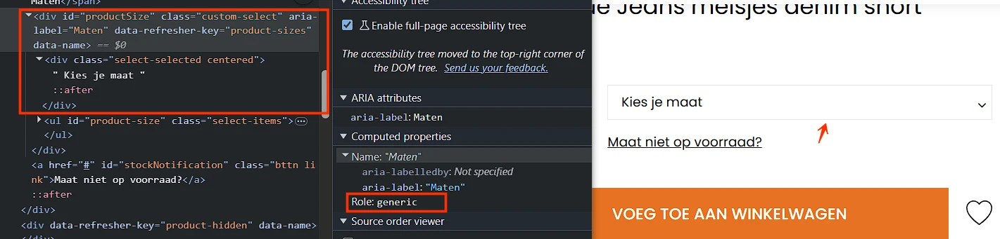
Op deze pagina heeft het element naast "Maten" onder "Indian Blue Jeans meisjes denim short" niet de juiste toegankelijke rol.
Dit element heeft niet de juiste toegankelijke rol. Daardoor herkennen schermlezers niet dat het om een keuzelijst gaat. Hulpsoftware kan het element niet correct aankondigen of bedienen.
Oplossing
Zorg ervoor dat dit element de juiste toegankelijke rol heeft. De beste oplossing is het gebruik maken van standaard HTML-elementen.
#87 - Toetsenbordbediening ontbreekt
Impact: GrootType: TechniekWCAG: 2.1.1EN: 9.2.1.1
Op deze pagina is het element naast "Maten" onder "Indian Blue Jeans meisjes denim short" niet bereikbaar met het toetsenbord.
Oplossing
Zorg ervoor dat de keuzelijst zowel met de spatiebalk als de Enter-toets kan worden bediend.
Op deze pagina functioneert de afbeelding naast de kop "Indian Blue Jeans meisjes denim short" als een link die bij klikken een schermvullende weergave van de afbeelding opent.
De link opent een schermvullende weergave van de afbeelding. Deze informatie is niet vastgelegd in de HTML-code. Daardoor is voor gebruikers van een schermlezer niet duidelijk wat het gedrag en het doel van de link is.
Oplossing
Geef in de code aan wat het gedrag van de link is. Dit kan bijvoorbeeld door:
beschrijvende tekst toe te voegen binnen het <a>-element, zoals "opent een grote weergave", en deze visueel te verbergen met CSS;
het attribuut aria-haspopup="dialog" toe te voegen aan het <a>-element om aan te geven dat de link een schermvullende weergave opent.
#89 - Dialoogvenster heeft geen toegankelijke naam
Impact: GrootType: TechniekWCAG: 4.1.2EN: 9.4.1.2
Op deze pagina functioneert de afbeelding naast de kop "Indian Blue Jeans meisjes denim short" als een link die een dialoogvenster opent. Dit dialoogvenster heeft geen toegankelijke naam.
Hulpsoftware kan daardoor niet doorgeven wat de inhoud van het dialoogvenster is.
Oplossing
Voeg een aria-label toe aan het dialoogvenster met een duidelijke beschrijving van de inhoud.
#90 - Contrast van icoon op link is minder dan 3,0:1
Op deze pagina functioneert de afbeelding naast de kop "Indian Blue Jeans meisjes denim short" als een link die een dialoogvenster opent. In dit dialoogvenster staan bovenaan links met lichtblauwe (#BFEBEB) iconen op een blauwe (#00AEAE) achtergrond. De contrastverhouding is laag: 2,1:1.
Als het contrast van een icoon op een link lager is dan 3,0:1, is het icoon lastig te zien voor bezoekers met een visuele beperking. Vooral als het icoon het enige is dat de functie van de link aangeeft (geen tekst erbij), is dit een probleem. WCAG 1.4.11 vereist een contrast van minimaal 3,0:1 voor niet-tekstuele elementen die nodig zijn om de interface te begrijpen.
Oplossing
Verhoog het contrast van het icoon ten opzichte van de achtergrond tot minimaal 3,0:1. Dit kan door de kleur van het icoon donkerder te maken of de achtergrondkleur aan te passen. Gebruik een contrastchecker om het resultaat te verifiëren.
#91 - kleurcontrast van tekst kleiner dan 24px en niet vetgedrukt is onvoldoende
Op deze pagina functioneert de afbeelding naast de kop "Indian Blue Jeans meisjes denim short" als een link die een dialoogvenster opent. In dit dialoogvenster staat bovenaan lichtblauwe (#BFEBEB) tekst op een blauwe (#00AEAE) achtergrond, bijvoorbeeld "1 / 3". De contrastverhouding is te laag: 2,1:1 .
Oplossing
Omdat deze tekst kleiner is dan 24px en niet vetgedrukt, moet het contrast minimaal 4,5:1 zijn.
#92 - Dialoogvenster heeft niet de juiste rol en geen toegankelijke naam
Impact: GrootType: TechniekWCAG: 4.1.2EN: 9.4.1.2
Op deze pagina opent de link "Maat niet op voorraad?" een dialoogvenster. Dit dialoogvenster heeft geen juiste rol en geen toegankelijke naam.
Schermlezers kunnen hierdoor niet doorgeven dat het om een dialoogvenster gaat, en wat de inhoud ervan is.
Oplossing
Voeg twee attributen toe aan het dialoogvenster: een aria-label met een duidelijke beschrijving van de inhoud (aria-label="Beschrijving van de inhoud") en role="dialog".
#93 - Afbeelding heeft geen tekstalternatief (alt-attribuut ontbreekt)
Op deze pagina opent de link "Maat niet op voorraad?" een dialoogvenster. In dit dialoogvenster staat een afbeelding zonder alt-attribuut.
Een img-element moet altijd een alt-attribuut hebben. Bij een decoratieve afbeelding die geen betekenis overdraagt, laat je dit attribuut leeg. Dan staat er alt="". Bij een informatieve afbeelding voeg je een duidelijke beschrijving van de afbeelding toe.
Oplossing
Voeg het alt-attribuut toe aan het img-element. Bij een decoratieve afbeelding laat je de waarde leeg, bij een informatieve afbeelding voeg je een duidelijke alternatieve tekst toe.
#94 - Dezelfde linkstekst, verschillende bestemming
Impact: MediumType: ContentWCAG: 2.4.4EN: 9.2.4.4
Er staan meerdere links die een andere weergave van het product openen, maar deze links hebben allemaal dezelfde toegankelijke naam: "Indian Blue Jeans meisjes denim short".
Op de pagina komen meerdere links met dezelfde linktekst voor, terwijl zij naar verschillende bestemmingen verwijzen. Daardoor is op basis van de linktekst niet te bepalen waar een link naartoe leidt. Dit kan verwarrend zijn voor bezoekers, met name voor gebruikers van een schermlezer die links los van hun context bekijken.
Oplossing
Maak het verschil in bestemming duidelijk in de linktekst.
Als de links naar verschillende bestemmingen leiden, moet de linktekst ook verschillen.
#95 - Knoppen in accordeons hebben onjuiste interactieve rol
Impact: GrootType: TechniekWCAG: 4.1.2EN: 9.4.1.2
Boven de sectie "Suggesties" staan secties met verborgen content, bijvoorbeeld "Productinformatie". In een sectie met verborgen content mist het element waarmee je de content kunt openen en sluiten de rol van knop.
De teksten die onderdelen van een accordeon in- of uitklappen functioneren als knoppen en moeten daarom correct zijn gemarkeerd.
Oplossing
Gebruik een kop-element met daarbinnen een button-element, bijvoorbeeld: <h2><button>Titel van de sectie</button></h2>.
Zorg ervoor dat de status van de accordeons (open/dicht) ook in de code is vastgelegd, bijvoorbeeld met het aria-expanded-attribuut.
#96 - Accordeon kan niet met het toetsenbord worden bediend
Boven de sectie "Suggesties" zijn accordeoncomponenten aanwezig, maar deze zijn niet bereikbaar met het toetsenbord.
Sommige bezoekers gebruiken alleen een toetsenbord om te navigeren en geen muis. Zij moeten alle klikbare onderdelen van de website gewoon kunnen gebruiken. Daaronder vallen bijvoorbeeld links, knoppen, formulieren, keuzelijsten, tabbladen, sliders en accordeons.
Zorg dat alles wat aanklikbaar is, ook werkt met het toetsenbord.
#97 - Kop niet gemarkeerd als kop
Impact: MediumType: ContentWCAG: 1.3.1EN: 9.1.3.1
Op deze pagina zijn de volgende teksten niet als kop gemarkeerd: "Suggesties" en "Laatst bekeken".
Dit probleem komt ook voor in secties met verborgen content, bijvoorbeeld in "Productinformatie" bij de tekst "Wasvoorschriften:"; en in "Retourinformatie" bij de tekst "Verzendkosten" en andere.
Voor bezoekers die hulpsoftware gebruiken, is tekst die visueel als kop is vormgegeven maar niet als kop is gemarkeerd in de code niet bruikbaar. Deze bezoekers navigeren via koppen om de inhoud te scannen of snel naar een specifieke sectie te gaan. Dit is alleen mogelijk wanneer koppen ook in de code als kop zijn vastgelegd. Wanneer koppen uitsluitend visueel zijn vormgegeven, bijvoorbeeld door vetgedrukte tekst, wijkt de informatiestructuur in de code af van de visuele structuur van de pagina.
Oplossing
Markeer koppen met het juiste HTML-element en gebruik daarbij het correcte kopniveau (h1 tot en met h6).
#98 - Alternatieve tekst zorgt voor herhaling van tekst
Impact: MediumType: ContentWCAG: 1.1.1EN: 9.1.1.1
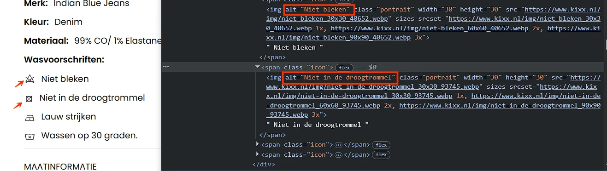
In de sectie met verborgen content "Productinformatie", onder "Wasvoorschriften:", staan afbeeldingen. De alternatieve teksten van de afbeeldingen herhalen de tekst naast de afbeeldingen.
De schermlezer leest nu dezelfde informatie twee keer voor. Laat het alt-attribuut leeg om herhaling van de tekst te voorkomen.
Oplossing
Laat het alt-attribuut leeg om herhaling van de tekst te voorkomen (alt="").
Er staan afbeeldingen die als link functioneren. Deze afbeeldingen hebben geen alt-attribuut. Zie bijvoorbeeld naast "LOOXS Little meisjes shirt".
Een img-element moet altijd een alt-attribuut hebben. Bij een decoratieve afbeelding die geen betekenis overdraagt, laat je dit attribuut leeg. Dan staat er alt="". Bij een informatieve afbeelding voeg je een duidelijke beschrijving van de afbeelding toe.
Dit hangt ook samen met succescriterium 4.1.2, omdat de link geen toegankelijke naam heeft, en met succescriterium 2.4.4, omdat het doel van de link niet duidelijk is.
Oplossing
Dit kan bijvoorbeeld worden opgelost door de afbeeldingslink en de tekstlink samen te voegen tot één link en een leeg alt-attribuut toe te voegen.
De tekst voor de huidige stap is wit op een lichtblauwe (#A0D3C8) achtergrond, bijvoorbeeld "Stap 1: winkelmand". De contrastverhouding is te laag: 1,7:1 .
Oplossing
Omdat deze tekst kleiner is dan 24px en niet vetgedrukt, moet het contrast minimaal 4,5:1 zijn.
#101 - Stap 1: afbeeldingslink zonder tekstalternatief
Er staan links met prullenbakiconen zonder tekstalternatief.
De link bestaat uit afbeeldingen zonder tekstalternatief. Daardoor heeft deze link geen inhoud die beschikbaar is voor hulpsoftware (4.1.2). Ook is de bestemming van de link niet duidelijk (2.4.4).
Oplossing
Voorzie de link van toegankelijke, tekstuele inhoud. Dit kan bijvoorbeeld door:
een beschrijvende tekst toe te voegen binnen het <a>-element en verberg deze visueel met CSS; een aria-label met een korte beschrijving van de bestemming van de link te gebruiken.
#102 - Stap 1: link heeft geen status (open-dicht)
Impact: GrootType: TechniekWCAG: 4.1.2EN: 9.4.1.2
Op deze pagina opent en sluit de link "Promotiecode toevoegen" extra content met een invoerveld, maar in de code wordt niet aangegeven of deze extra content open of gesloten is.
Daardoor kan hulpsoftware niet bepalen of de extra inhoud zichtbaar of verborgen is.
Oplossing
Leg de staat van de extra inhoud vast in de code. Gebruik hiervoor het aria-expanded-attribuut met de waarde true of false .
#103 - Stap 1: invoerveld heeft geen toegankelijke naam
Impact: GrootType: TechniekWCAG: 4.1.2EN: 9.4.1.2
Op deze pagina opent en sluit de link "Promotiecode toevoegen" extra content met een invoerveld. Dit invoerveld heeft geen toegankelijke naam.
Hierdoor is het voor blinde of slechtziende bezoekers die een schermlezer gebruiken niet duidelijk wat zij in moeten vullen.
Oplossing
Dit los je op door het invoerveld een toegankelijke naam te geven, bijvoorbeeld door een label-element aan het veld te koppelen.
#104 - Stap 1: kleur van de rand van het invoerveld heeft niet genoeg contrast
Op deze pagina opent en sluit de link "Promotiecode toevoegen" extra content met een invoerveld. De contrastverhouding tussen de lichtgrijze (#E6E6E6) randen van het invoerveld en de witte achtergrond van de pagina is 1,2:1 .
Oplossing
De randen van interactieve elementen zoals invoervelden moeten minimaal een contrast van 3,0:1 hebben met de achtergrond.
#105 - Stap 1: het selectievakje verandert de context zonder waarschuwing
Impact: GrootType: TechniekWCAG: 3.2.2EN: 9.3.2.2
Onder de kop "Kixx Select" staat een schakelknop "Kixx Select (€9.99)" schakelknop. Het activeren van deze schakelknop zorgt ervoor dat de pagina opnieuw wordt geladen en de toetsenbordfocus naar een andere locatie wordt verplaatst. Dit leidt tot een contextverandering die plaatsvindt zonder voorafgaande waarschuwing.
Oplossing
Zorg dat de bezoeker van tevoren wordt gewaarschuwd over deze verandering.
#106 - Stap 1: randen van selectievakje hebben niet voldoende kleurcontrast
Onder de kop "Kixx Select" heeft de schakelknop "Kixx Select (€9.99)" schakelknop heeft een lichtgrijze (#E5E5E5) achtergrond. De achtergrondkleur van de pagina is wit, wat resulteert in een contrastverhouding van 1,3:1 .
Oplossing
Het kleurcontrast tussen de randkleur en de achtergrondkleur van interactieve elementen zoals deze selectievakje moet minimaal 3,0:1 zijn.
#107 - Stap 2: de relatie tussen keuzerondjes is niet in de code vastgelegd
Er staat een groep keuzerondjes, voorafgegaan door de tekst "Geslacht". Visueel vormen deze elementen een groep, maar die relatie is niet vastgelegd in de HTML.
Visueel vormen deze elementen een groep, maar die relatie is niet vastgelegd in de code.
Dit probleem komt ook voor onder "Selecteer adres".
Oplossing
Je lost dit op door de elementen in een fieldset-element te plaatsen. Een fieldset met interactieve inhoud moet een naam hebben. Hiervoor kun je het legend-element gebruiken. Plaats hierin de tekst "Geslacht".
#108 - Stap 3: keuzerondjes hebben geen toegankelijke rol
Onder de kop "Betaalmethode" staat een groep keuzerondjes. Deze keuzerondjes hebben geen toegankelijke rollen.
Elk HTML-element heeft van zichzelf standaard een rol die zijn functie en gedrag beschrijft. Dit betekent dat het element bepaalde eigenschappen en functies heeft om informatie aan de bezoeker te geven of van de bezoeker te ontvangen. De rol bepaalt dus wat het element doet. Voorbeelden zijn button, a (link), en header, die automatisch een rol hebben die door browsers en hulpmiddelen zoals schermlezers wordt herkend.
Oplossing
Schermlezers en andere hulpmiddelen moeten de correcte rol van elk element op een webpagina kennen. Zo kunnen ze op een slimme manier met het element omgaan en aan de bezoeker uitleggen wat het element doet. Als een rol niet toegankelijk is, dan betekent dit dat de rol niet correct is ingesteld of dat niet de juiste code is gebruikt.
De primaire taal van deze pagina is Nederlands, maar het lang-attribuut is onjuist ingesteld.
De primaire taal van de pagina is Nederlands, maar de taalcode in het lang-attribuut van het html-element is onjuist ingesteld (lang="en"). Schermlezers gebruiken deze code om de juiste uitspraakregels toe te passen.
Wanneer de taal van de pagina niet correct is vastgelegd, wordt de inhoud met onjuiste uitspraakregels voorgelezen. Daardoor is de tekst lastiger te begrijpen voor bezoekers die schermlezers gebruiken.
Oplossing
Zorg ervoor dat de taal van de pagina is ingesteld op Nederlands ( lang="nl" ), zodat hulpsoftware de inhoud op de juiste manier kan voorlezen.
Het logo "MultiSafepay" bovenaan de pagina heeft geen tekstalternatief. Het alt-attribuut is leeg.
Een img-element moet altijd een alt-attribuut hebben.
Informatieve afbeeldingen, zoals een logo, moeten altijd een alt-tekst hebben waarin de volledige tekst is opgenomen die in het logo zichtbaar is. Zonder dit alternatief is de informatie in het logo niet beschikbaar voor bezoekers die de afbeelding niet kunnen waarnemen.
Oplossing
Voeg een alt-attribuut toe met de zichtbare tekst van het "MultiSafepay"-logo aan het img-element.
Bovenaan staat een "NL"-knop die het taalselectiemenu opent. Deze knop heeft niet de juiste toegankelijke rol.
Elk HTML-element heeft van zichzelf standaard een rol die zijn functie en gedrag beschrijft. Dit betekent dat het element bepaalde eigenschappen en functies heeft om informatie aan de bezoeker te geven of van de bezoeker te ontvangen. De rol bepaalt dus wat het element doet. Voorbeelden zijn button, a (link), en header, die automatisch een rol hebben die door browsers en hulpmiddelen zoals schermlezers wordt herkend.
Oplossing
Schermlezers en andere hulpmiddelen moeten de correcte rol van elk element op een webpagina kennen. Zo kunnen ze op een slimme manier met het element omgaan en aan de bezoeker uitleggen wat het element doet. Als een rol niet toegankelijk is, dan betekent dit dat de rol niet correct is ingesteld of dat niet de juiste code is gebruikt.
Zorg dat de knop de juiste rol krijgt.
#112 - Stap 4: kleurcontrast van tekst kleiner dan 24px en niet vetgedrukt is onvoldoende
Er staat grijze (#A4A3A3) tekst op een witte achtergrond, bijvoorbeeld "Shop". De contrastverhouding is te laag: 2,5:1.
Dit probleem komt ook voor bij andere grijze (#8B8B8B) tekst op een witte achtergrond, bijvoorbeeld "Kaartnummer". De contrastverhouding is te laag: 3,4:1.
Oplossing
Omdat deze tekst kleiner is dan 24px en niet vetgedrukt, moet het contrast minimaal 4,5:1 zijn.
#113 - Stap 4: keuzelijst heeft geen toegankelijke naam
Deze pagina bevat bevindingen die hierboven al zijn beschreven.
#114 - Accordeon: open/dicht-status van accordeonsecties ontbreekt in de code
Impact: GrootType: TechniekWCAG: 4.1.2EN: 9.4.1.2
Op deze pagina staan secties met verborgen content. De open of gesloten status is visueel zichtbaar, maar wordt niet programmatisch doorgegeven aan schermlezers.
Voor bezoekers die de pagina kunnen zien, is het duidelijk of een sectie in- of uitgeklapt is. Maar voor blinde of slechtziende bezoekers die een schermlezer gebruiken is dat niet zo.
Oplossing
Dit is op te lossen door een aria-expanded-attribuut toe te passen op de links worden geopend en gesloten of door visueel verborgen tekst toe te voegen die de staat van de sectie beschrijft.
Op deze pagina zijn in de secties met verborgen content de elementen waarmee je de content kunt openen en sluiten niet als kop gemarkeerd.
De teksten waarmee je delen van een accordeon kunt inklappen en uitklappen, doen dienst als koppen voor die delen. Daarom moeten deze teksten ook de rol van kop hebben. Het gaat verkeerd als deze teksten niet in de code als kop zijn gemarkeerd met een h-element zoals h2 of h3.
Oplossing
Markeer deze teksten als kop of zorg dat de bestaande rol van kop niet wordt overschreven.
In de sectie met verborgen content die wordt geopend door "Ik heb een klacht." is een tekstblok met meerdere alinea's onjuist gemarkeerd als één <p>-element.
Visueel zijn er meerdere tekstblokken met witruimte ertussen zichtbaar. Deze structuur komt in de code niet overeen met de visuele presentatie.
Oplossing
Plaats elke alinea in een afzonderlijk <p>-element. Het aantal alinea's dat wordt weergegeven, moet overeenkomen met het aantal <p>-elementen in de code.
#117 - Accordeon: klikbare items in een gesloten accordeonsectie krijgen toch toetsenbordfocus
Impact: GrootType: TechniekWCAG: 2.4.3EN: 9.2.4.3
Op deze pagina hebben secties met verborgen content een probleem met de focusvolgorde. Elementen in ingeklapte blokken krijgen nog steeds toetsenbordfocus, hoewel ze niet zichtbaar zijn.
Dit is verwarrend voor bezoekers die met het toetsenbord navigeren en daarbij naar het scherm kijken.
Oplossing
Zorg dat elementen die niet zichtbaar zijn geen toetsenbordfocus krijgen.
Deze pagina bevat bevindingen die hierboven al zijn beschreven.
#118 - Koppen zijn niet als kop gemarkeerd
Impact: MediumType: ContentWCAG: 1.3.1EN: 9.1.3.1
Op deze pagina zijn de volgende teksten koppen, maar de kopelementen ontbreken. Het strong-element wordt gebruikt om ze visueel op koppen te laten lijken. Zie bijvoorbeeld "Inhoudsopgave:", "Artikel 1 - Definities" en andere.
Het strong-element zijn niet bedoeld om koppen mee te markeren. Deze elementen geven uitsluitend nadruk aan tekst en hebben geen semantische betekenis als kop.
Koppen worden gebruikt om de structuur van een tekst vast te leggen. Alleen wanneer koppen met een kop-element (h1 tot en met h6) zijn gemarkeerd, hulpsoftware deze structuur herkennen en correct interpreteren.
Oplossing
Verwijder het strong-element en markeer deze tekst met een passend kop-element, zoals h2 of h3. De visuele opmaak kan eventueel met CSS worden toegepast.
Dit type element wordt vaak toegevoegd via de knop "B" (vet) in een tekstbewerker.
#119 - Opsomming onjuist gemarkeerd
Impact: MediumType: ContentWCAG: 1.3.1EN: 9.1.3.1
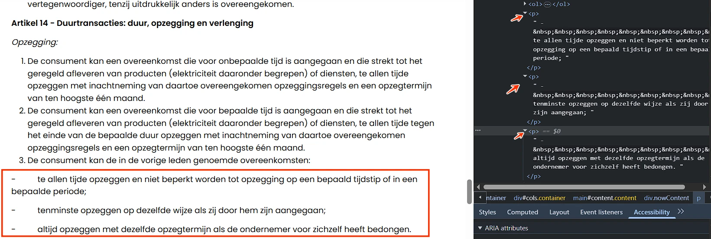
Onder de tekst "Artikel 14 - Duurtransacties: duur, opzegging en verlenging" staat een ongeordende lijst van 3 items die begint met "te allen tijde opzeggen en … periode;" maar de juiste opmaak ontbreekt.
Daardoor is de structuur van de informatie niet correct vastgelegd en kan hulpsoftware niet herkennen dat het om een opsomming gaat. Schermlezers kondigen in dat geval niet aan hoeveel items een lijst bevat. Dit maakt het voor gebruikers van een schermlezer lastiger om de hoeveelheid informatie in te schatten
Dit probleem komt ook voor onder de tekst "Bijlage I: Modelformulier voor herroeping".
Oplossing
Zorg ervoor dat alle opsommingen correct worden gemarkeerd in de HTML-structuur, bijvoorbeeld met een <ol>-element (genummerde lijst) of <ul>-element (opsomming met opsommingstekens). Gebruik bij geneste opsommingen een lijst binnen het bijbehorende 'li'-element.
Meer informatie over het belang van correcte HTML-lijsten is te vinden op: https://www.properaccess.nl/blog/waarom-correcte-html-lijsten-het-verschil-maken-in-toegankelijkheid/.
#120 - Klikbaar element heeft onvoldoende contrast
Op een klein scherm verschijnt een select-element met lichtgrijze (#E5E5E5) randen op een witte achtergrond. De contrastverhouding is laag: 1,3:1.
Interactieve elementen zoals knoppen, invoervelden en selectievakjes moeten visueel goed te onderscheiden zijn van hun omgeving. Als de contrastverhouding van de rand of het oppervlak lager is dan 3:1, kunnen bezoekers met een verminderd gezichtsvermogen het element mogelijk niet herkennen.
Oplossing
Zorg ervoor dat de visuele begrenzing of het oppervlak van dit element een contrastverhouding van minimaal 3:1 heeft ten opzichte van de aangrenzende achtergrond. Dit geldt ook voor alle toestanden van het element, zoals :focus en :hover.
Op deze pagina overlapt de tekst van de link "Toegankelijkheidsverklaring" de tekst naast "0 tot 1" wanneer bezoekers de tekstafstand aanpassen zoals beschreven in dit succescriterium, en wordt deze gedeeltelijk onzichtbaar en onleesbaar.
Sommige bezoekers passen de weergave van de tekst aan, zodat zij de tekst beter kunnen lezen. Denk aan het vergroten van de afstand tussen regels, letters of woorden. Het gaat bijvoorbeeld om mensen met dyslexie. Als een bezoeker dit doet op de manier die in succescriterium 1.4.12 is beschreven, moet alles goed blijven werken. Bovendien moet de tekst leesbaar blijven.
Oplossing
Je lost dit op door de hoogte en breedte van de containers van de tekst responsief te maken.
In de footer staat een link met het "Webwinkel KEUR"-logo. Bij het hoveren over deze link verschijnt extra content die andere pagina-elementen overlapt, zoals de link "Feetje". Deze extra content kan niet worden gesloten zonder de muisaanwijzer van het element weg te bewegen.
Wanneer er extra inhoud verschijnt bij het aanwijzen of focussen van een element, moet het mogelijk zijn deze te sluiten zonder de aanwijzer of focus te verplaatsen. Bezoekers die een schermvergroter gebruiken kunnen door de extra inhoud een deel van de pagina niet meer zien. Zonder een manier om de inhoud te sluiten, bijvoorbeeld met Escape, wordt de onderliggende inhoud geblokkeerd.
Oplossing
Zorg ervoor dat de extra content eenvoudig kan worden gesloten met het toetsenbord. Bijvoorbeeld door de Escape-toets in te drukken. Bezoekers kunnen de extra content snel verbergen en verder navigeren op de pagina.
#123 - "WebwinkelKeur": Koppen zijn niet als kop gemarkeerd
Impact: MediumType: ContentWCAG: 1.3.1EN: 9.1.3.1
In de footer staat een link met het "Webwinkel KEUR"-logo. Bij het hoveren over deze link verschijnt extra content met de tekst "Reviews & Zekerheden". Deze tekst is een kop, maar het kopelement ontbreekt. Het strong-element wordt gebruikt om het visueel op een kop te laten lijken.
Het strong-element zijn niet bedoeld om koppen mee te markeren. Deze elementen geven uitsluitend nadruk aan tekst en hebben geen semantische betekenis als kop.
Koppen worden gebruikt om de structuur van een tekst vast te leggen. Alleen wanneer koppen met een kop-element (h1 tot en met h6) zijn gemarkeerd, hulpsoftware deze structuur herkennen en correct interpreteren.
Oplossing
Verwijder het strong-element en markeer deze tekst met een passend kop-element, zoals h2 of h3. De visuele opmaak kan eventueel met CSS worden toegepast.
Dit type element wordt vaak toegevoegd via de knop "B" (vet) in een tekstbewerker.
#124 - "WebwinkelKeur": Dialoogvenster heeft geen toegankelijke naam
Impact: GrootType: TechniekWCAG: 4.1.2EN: 9.4.1.2
In de footer opent de link "Webwinkel KEUR" een dialoogvenster. Dit dialoogvenster heeft geen toegankelijke naam.
Hulpsoftware kan daardoor niet doorgeven wat de inhoud van het dialoogvenster is.
Oplossing
Voeg een aria-label toe aan het dialoogvenster met een duidelijke beschrijving van de inhoud.
#125 - "WebwinkelKeur": kleurcontrast van tekst is onvoldoende
In de footer opent de link "Webwinkel KEUR" een dialoogvenster. In dit dialoogvenster staat roze (#FE008C) tekst op een witte achtergrond, bijvoorbeeld "www.kixx.nl/" en andere. De contrastverhouding is te laag: 3,8:1.
Oplossing
Omdat deze tekst kleiner is dan 24px en niet vetgedrukt, moet het contrast minimaal 4,5:1 zijn.
In de footer opent de link "Webwinkel KEUR" een dialoogvenster. In dit dialoogvenster heeft de actieve link (naar het huidige tabblad) een opvallend visueel uiterlijk, maar dit onderscheid is niet aanwezig in de code.
Oplossing
Leg ook in de code vast welke link actief is. Voeg bijvoorbeeld aria-current="true" toe aan de actieve link.
#127 - "WebwinkelKeur": Knop heeft geen toegankelijke naam
In het tabblad "Zekerheden" functioneert de sectie met de beoordeling "8,4" en de tekst "Beoordeeld als 8,4 door 16,068 klanten" als een knop die extra content opent. Deze knop heeft geen toegankelijke naam.
Knoppen moeten altijd een toegankelijke naam hebben die hun functie beschrijft. Bovendien moet de naam mee veranderen als de functie van de knop verandert. Toegankelijke namen mogen nooit leeg zijn, want zonder deze naam weet een blinde bezoeker niet wat de knop doet.
Oplossing
Zorg dat deze knop een toegankelijke naam krijgt die beschrijft wat de functie is.
#128 - "WebwinkelKeur": Alternatieve tekst zorgt voor herhaling van tekst
Impact: MediumType: ContentWCAG: 1.1.1EN: 9.1.1.1
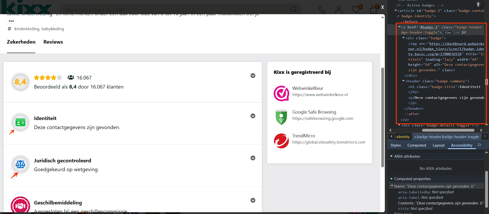
In het tabblad "Zekerheden" staan links met iconen. De alternatieve teksten van de iconen herhalen de tekst naast de iconen.
De schermlezer leest nu dezelfde informatie twee keer voor.
Oplossing
Laat het alt-attribuut leeg om herhaling van de tekst te voorkomen (alt="").
Let op: delen van de links krijgen hun toegankelijke naam via de alt-tekst van deze afbeeldingen. Als de alt-tekst wordt verwijderd, heeft de link geen toegankelijke naam meer. Daarom moet je de toegankelijke namen van de links op een andere manier aanbieden, bijvoorbeeld met het aria-label-attribuut.
Andere oplossingen zijn ook mogelijk.
#129 - "WebwinkelKeur": Knoppen in accordeons hebben onjuiste interactieve rol
Impact: GrootType: TechniekWCAG: 4.1.2EN: 9.4.1.2
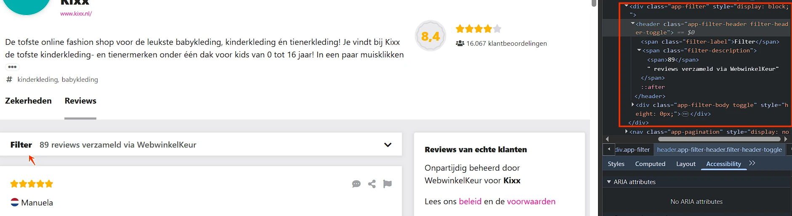
In het tabblad "Reviews" staat een sectie met verborgen content "Filter". Het element waarmee je de verborgen content kunt openen en sluiten mist de rol van knop en de status.
De teksten die onderdelen van een accordeon in- of uitklappen functioneren als knoppen en moeten daarom correct zijn gemarkeerd.
Voor bezoekers die de pagina kunnen zien, is het duidelijk of een sectie in- of uitgeklapt is. Maar voor blinde of slechtziende bezoekers die een schermlezer gebruiken is dat niet zo.
Oplossing
Gebruik een kop-element met daarbinnen een button-element, bijvoorbeeld: <h2><button>Titel van de sectie</button></h2>.
Geef de status van secties aan door het aria-expanded-attribuut toe te voegen aan de knoppen voor in- en uitklappen, of voeg visueel verborgen tekst toe die de status van de sectie beschrijft.
#130 - "WebwinkelKeur": Afbeeldingslink zonder tekstalternatief
In het tabblad "Reviews" staan links met vlagiconen zonder tekstalternatief.
De link bestaat uit afbeeldingen zonder tekstalternatief. Daardoor heeft deze link geen inhoud die beschikbaar is voor hulpsoftware (4.1.2). Ook is de bestemming van de link niet duidelijk (2.4.4).
Oplossing
Voorzie de link van toegankelijke, tekstuele inhoud. Dit kan bijvoorbeeld door:
een beschrijvende tekst toe te voegen binnen het <a>-element en verberg deze visueel met CSS; een aria-label met een korte beschrijving van de bestemming van de link te gebruiken.
#131 - "WebwinkelKeur": informatieve afbeeldingen missen alternatieve tekst
Impact: MediumType: ContentWCAG: 1.1.1EN: 9.1.1.1
In het tabblad "Reviews" staan afbeeldingen van landvlaggen van bezoekers. Deze afbeeldingen hebben geen tekstalternatief. Dit probleem komt ook voor bij de sterbeoordelingsiconen.
Wanneer een afbeelding informatie overbrengt, moet de alternatieve tekst die informatie volledig en betekenisvol beschrijven. In dit geval wordt de visueel aangeboden informatie niet overgebracht aan gebruikers van schermlezers.
Oplossing
Voeg tekstalternatieven toe aan deze informatieve afbeeldingen, bijvoorbeeld als tekst op de pagina of visueel verborgen tekst.
#132 - "WebwinkelKeur": onvoldoende contrast van een informatief icoon
In het tabblad "Reviews" staan links met grijze (#A2A2A6) reactie-, deel- en vlagiconen op een witte achtergrond. De contrastverhouding is 2,5:1.
Als het contrast van een icoon op een link lager is dan 3,0:1, is het icoon lastig te zien voor bezoekers met een visuele beperking. Vooral als het icoon het enige is dat de functie van de link aangeeft (geen tekst erbij), is dit een probleem. WCAG 1.4.11 vereist een contrast van minimaal 3,0:1 voor niet-tekstuele elementen die nodig zijn om de interface te begrijpen.
Oplossing
Verhoog het contrast van het icoon ten opzichte van de achtergrond tot minimaal 3,0:1. Dit kan door de kleur van het icoon donkerder te maken of de achtergrondkleur aan te passen. Gebruik een contrastchecker om het resultaat te verifiëren.
#133 - "WebwinkelKeur": Interactieve elementen zijn verborgen voor hulpsoftware
Impact: GrootType: TechniekWCAG: 1.3.1EN: 9.1.3.1
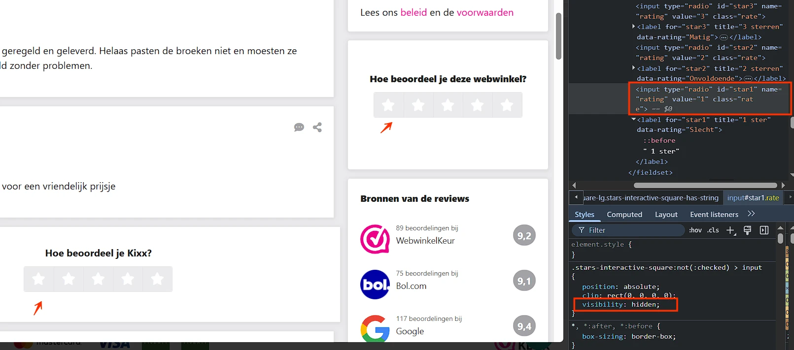
In het tabblad "Reviews", onder de koppen "Hoe beoordeel je Kixx?" en "Hoe beoordeel je deze webwinkel?", staan keuzerondjes met stericonen. Deze keuzerondjes zijn verborgen voor een schermlezer met "visibility: hidden;".
Voor bezoekers die de pagina laten voorlezen is deze informatie daardoor niet toegankelijk. Het is niet toegestaan om informatie of functionaliteit te verbergen voor hulpsoftware.
Oplossing
Verwijder de CSS-eigenschap visibility: hidden;.
#134 - "WebwinkelKeur": UI-component heeft onvoldoende contrast
In het tabblad "Reviews", onder de koppen "Hoe beoordeel je Kixx?" en "Hoe beoordeel je deze webwinkel?", staan keuzerondjes met stericonen. Deze sterren zijn wit op een lichtgrijze (#EBEBED) achtergrond. De contrastverhouding is laag: 1,2:1.
Dit probleem komt ook voor bij andere kleurcombinaties, bijvoorbeeld op lichtgeel (#FFB400). De contrastverhouding is laag: 1,8:1.
Interactieve elementen zoals knoppen, invoervelden en selectievakjes moeten visueel goed te onderscheiden zijn van hun omgeving. Als de contrastverhouding van de rand of het oppervlak lager is dan 3:1, kunnen bezoekers met een verminderd gezichtsvermogen het element mogelijk niet herkennen.
Oplossing
Zorg ervoor dat de visuele begrenzing of het oppervlak van dit element een contrastverhouding van minimaal 3:1 heeft ten opzichte van de aangrenzende achtergrond. Dit geldt ook voor alle toestanden van het element, zoals :focus en :hover.
In het tabblad "Reviews", onder de kop "Reviews van echte klanten", bevat de alinea links, zoals "beleid". Kleur is het enige verschil tussen de link en de statische tekst.
Hoewel het contrast tussen de statische tekst en de linktekst meer dan 3:1 is (4,2:1), mist deze link aanvullende visuele indicatoren bij hover die niet op kleur zijn gebaseerd, zoals onderstreping.
Dit probleem komt ook voor in het formulier dat verschijnt na het klikken op de link met het vlagicoon.
De links in de tekst zijn alleen te herkennen aan een kleurverschil ten opzichte van de omringende tekst. Daardoor is niet voor alle bezoekers duidelijk dat het om links gaat.
Oplossing
Kleur mag worden gebruikt om links van statische tekst te onderscheiden mits ze aan deze twee voorwaarden voldoen:
het contrast tussen de linktekst en de omringende tekst is minimaal 3:1 ; er is een extra visuele indicator aanwezig, zoals een onderstreping of een wijziging in achtergrondkleur bij hover of focus.
#136 - "WebwinkelKeur": kleurcontrast van tekst kleiner dan 24px en niet vetgedrukt is onvoldoende
In het tabblad "Reviews", onder de kop "Bronnen van de reviews", staat witte tekst op een grijze (#A2A2A6) achtergrond, bijvoorbeeld "9,2". De contrastverhouding is te laag: 2,5:1.
Dit probleem komt ook voor in de sectie "Filter", bijvoorbeeld bij "(66)".
Oplossing
Omdat deze tekst kleiner is dan 24px en niet vetgedrukt, moet het contrast minimaal 4,5:1 zijn.
#137 - "WebwinkelKeur": De kleur van de rand van het invoerveld heeft niet genoeg contrast
In het tabblad "Reviews" staan links met een vlagicoon. Wanneer deze links worden aangeklikt, verschijnt een formulier. De randen van de invoervelden zijn lichtgrijs (#D8D8DE) op een witte achtergrond. De contrastverhouding is 1,4:1.
Dit probleem komt ook voor bij de randen van de selectievakjes.
Oplossing
De randen van interactieve elementen zoals invoervelden moeten minimaal een contrast van 3,0:1 hebben met de achtergrond.
#138 - "WebwinkelKeur": kleurcontrast van tekst is onvoldoende
In het tabblad "Reviews" staan links met een vlagicoon. Wanneer deze links worden aangeklikt, verschijnt een formulier met grijze (#A2A2A6) tekst op een lichtgrijze (#EBEBED) achtergrond, bijvoorbeeld "Opmerking: Dit proces is alleen … moderatie aan te vragen." De contrastverhouding is te laag: 2,1:1.
Oplossing
Omdat deze tekst kleiner is dan 24px en niet vetgedrukt, moet het contrast minimaal 4,5:1 zijn.
#139 - "WebwinkelKeur": autocomplete-attribuut ontbreekt bij invoervelden voor persoonsgegevens
In het tabblad "Reviews" staan links met een vlagicoon. Wanneer deze links worden aangeklikt, verschijnt een formulier. Dit formulier bevat invoervelden voor persoonlijke informatie (bijvoorbeeld naam, e-mail) zonder het autocomplete-attribuut.
Invoervelden voor persoonlijke informatie, zoals achternaam, e-mailadres of telefoonnummer, moeten het autocomplete-attribuut bevatten. Dit stelt browsers en hulpsoftware in staat om gebruikers te ondersteunen, bijvoorbeeld door relevante velden automatisch in te vullen.
Oplossing
Gebruik het autocomplete-attribuut voor alle velden waarin persoonsgegevens moet worden gevuld. Meer informatie over autocomplete en welke waardes je verplicht moet gebruiken : https://www.w3.org/Translations/WCAG22-nl/#input-purposes.
#140 - Chat "Kixx AI Assistant": Dialoogvenster heeft niet de juiste rol en geen toegankelijke naam
Impact: GrootType: TechniekWCAG: 4.1.2EN: 9.4.1.2
Onderaan de website staat een knop om een chat te openen in een dialoogvenster. Dit dialoogvenster heeft geen juiste rol en geen toegankelijke naam.
Schermlezers kunnen hierdoor niet doorgeven dat het om een dialoogvenster gaat, en wat de inhoud ervan is.
Oplossing
Voeg twee attributen toe aan het dialoogvenster: een aria-label met een duidelijke beschrijving van de inhoud (aria-label="Beschrijving van de inhoud") en role="dialog".
#141 - Chat "Kixx AI Assistant": Onjuiste beschrijving knopnaam
Impact: GrootType: TechniekWCAG: 2.4.6EN: 9.2.4.6
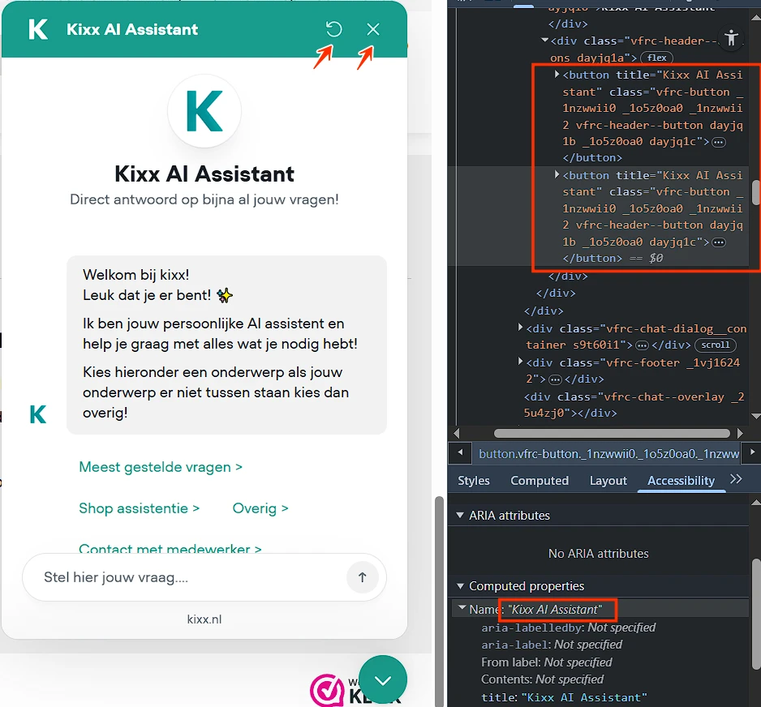
Bovenaan de chat staan twee knoppen met iconen voor het vernieuwen en sluiten van de chat. De toegankelijke namen van deze knoppen zijn "Kixx AI Assistant", wat hun functie niet nauwkeurig beschrijft.
De toegankelijke naam van de knop beschrijft niet wat de knop doet. Daardoor is voor gebruikers van een schermlezer niet duidelijk welke actie wordt uitgevoerd.
Oplossing
Zorg ervoor dat de toegankelijke naam van de knop de functie duidelijk beschrijft.
#142 - Chat "Kixx AI Assistant": contrast van icoon op knop is minder dan 3,0:1
Bovenaan de chat staan twee knoppen met lichtblauwe (#D1EBE8) iconen voor het vernieuwen en sluiten van de chat op een blauwe (#189C8C) achtergrond. De contrastverhouding is laag: 2,7:1.
Als het contrast van een icoon op een knop lager is dan 3,0:1, is het icoon lastig te zien voor bezoekers met een visuele beperking. Vooral als het icoon het enige is dat de functie van de knop aangeeft (geen tekst erbij), is dit een probleem. WCAG 1.4.11 vereist een contrast van minimaal 3,0:1 voor niet-tekstuele elementen die nodig zijn om de interface te begrijpen.
Oplossing
Verhoog het contrast van het icoon ten opzichte van de achtergrond tot minimaal 3,0:1. Dit kan door de kleur van het icoon donkerder te maken of de achtergrondkleur aan te passen. Gebruik een contrastchecker om het resultaat te verifiëren.
#143 - Chat "Kixx AI Assistant": Engelstalig tekstalternatief op Nederlandstalige pagina's
In de chat staan logo's met alt-tekst in het Engels "system agent avatar", terwijl de website in het Nederlands is.
Een schermlezer leest de tekst voor in de taal van de pagina. Als het tekstalternatief in een andere taal is, wordt het onverstaanbaar voorgelezen.
Oplossing
Schrijf het tekstalternatief in dezelfde taal als de pagina. Als het tekstalternatief in een andere taal moet zijn, geef dan de taal aan met het lang-attribuut op het element, bijvoorbeeld lang="en" voor Engels.
#144 - Chat "Kixx AI Assistant": Kop niet gemarkeerd als kop
Impact: MediumType: ContentWCAG: 1.3.1EN: 9.1.3.1
In de chat is de volgende tekst niet als kop gemarkeerd: "Kixx AI Assistant".
Voor bezoekers die hulpsoftware gebruiken, is tekst die visueel als kop is vormgegeven maar niet als kop is gemarkeerd in de code niet bruikbaar. Deze bezoekers navigeren via koppen om de inhoud te scannen of snel naar een specifieke sectie te gaan. Dit is alleen mogelijk wanneer koppen ook in de code als kop zijn vastgelegd. Wanneer koppen uitsluitend visueel zijn vormgegeven, bijvoorbeeld door vetgedrukte tekst, wijkt de informatiestructuur in de code af van de visuele structuur van de pagina.
Oplossing
Markeer koppen met het juiste HTML-element en gebruik daarbij het correcte kopniveau (h1 tot en met h6).
#145 - Chat "Kixx AI Assistant": Nieuwe chatberichten worden niet tijdig voorgelezen door schermlezers
Impact: GrootType: TechniekWCAG: 4.1.3EN: 9.4.1.3
De chatfunctie toont nieuwe berichten zonder ze toetsenbordfocus te geven of als statusberichten te markeren. Hierdoor lezen schermlezers nieuwe berichten niet automatisch voor.
Dat moet wel gebeuren.
Oplossing
Gebruik bijvoorbeeld een aria-live-attribuut of voeg role="status" toe aan de chatberichten.
#146 - Chat "Kixx AI Assistant": Toetsenbordfocus kan het chat verlaten
Impact: GrootType: TechniekWCAG: 2.4.3EN: 9.2.4.3
De toetsenbordfocus kan het dialoogvenster met de chat verlaten, waardoor gebruikers kunnen interacteren met content achter de overlay.
Als je met het toetsenbord door de pagina navigeert, kan de focus het dialoogvenster verlaten. Daardoor kun je interacteren met inhoud die achter het venster ligt. Dit is verwarrend en kan ervoor zorgen dat je het dialoogvenster niet meer kunt bedienen of sluiten.
Oplossing
Zorg ervoor dat de toetsenbordfocus binnen het dialoogvenster blijft totdat het venster wordt gesloten. Implementeer een focus trap zodat de Tab-toets alleen door de elementen binnen het venster navigeert.
#147 - Chat "Kixx AI Assistant": Elementen die bedekt worden door een venster krijgen nog toetsenbordfocus
Het dialoogvenster met de chat bedekt een deel van de pagina. Interactieve elementen onder deze chat kunnen nog steeds toetsenbordfocus krijgen, hoewel ze visueel zijn verborgen.
Oplossing
Zorg dat alleen zichtbare elementen toetsenbordfocus kunnen krijgen.
#148 - "Ontvang 10% korting": Dialoogvenster heeft niet de juiste rol en geen toegankelijke naam
Impact: GrootType: TechniekWCAG: 4.1.2EN: 9.4.1.2
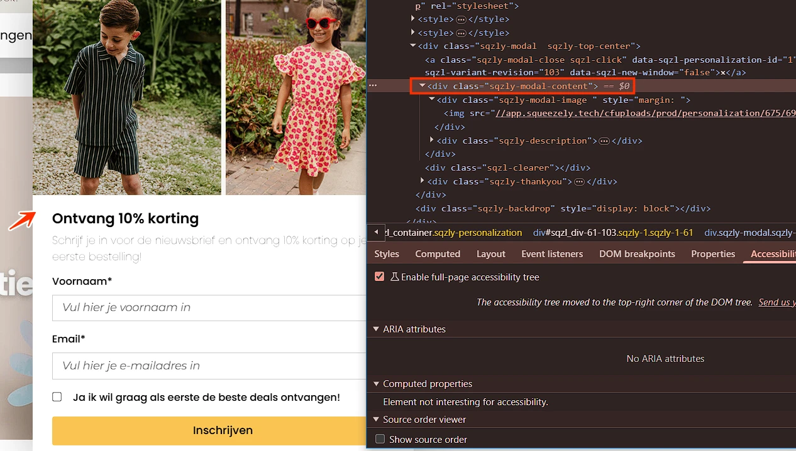
Op een bepaald moment verschijnt een dialoogvenster "Ontvang 10% korting". Dit dialoogvenster heeft geen juiste rol en geen toegankelijke naam.
Schermlezers kunnen hierdoor niet doorgeven dat het om een dialoogvenster gaat, en wat de inhoud ervan is.
Oplossing
Voeg twee attributen toe aan het dialoogvenster: een aria-label met een duidelijke beschrijving van de inhoud (aria-label="Beschrijving van de inhoud") en role="dialog".
#149 - "Ontvang 10% korting": Afbeelding heeft geen tekstalternatief (alt-attribuut ontbreekt)
In dit dialoogvenster staat een afbeelding zonder alt-attribuut.
Een img-element moet altijd een alt-attribuut hebben. Bij een decoratieve afbeelding die geen betekenis overdraagt, laat je dit attribuut leeg. Dan staat er alt="". Bij een informatieve afbeelding voeg je een duidelijke beschrijving van de afbeelding toe.
Oplossing
Voeg het alt-attribuut toe aan het img-element. Bij een decoratieve afbeelding laat je de waarde leeg, bij een informatieve afbeelding voeg je een duidelijke alternatieve tekst toe.
#150 - "Ontvang 10% korting": Knop heeft geen toegankelijke rol en naam
Impact: GrootType: TechniekWCAG: 4.1.2EN: 9.4.1.2
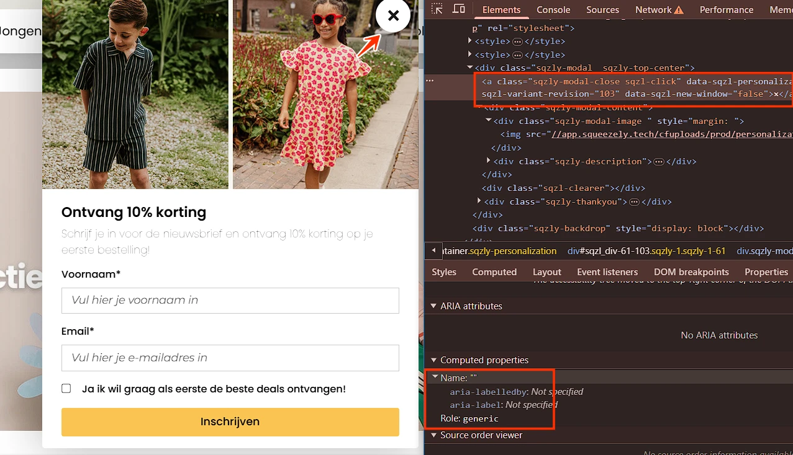
In dit dialoogvenster staat een knop "x". Deze knop heeft geen toegankelijke rol en naam.
Elk HTML-element heeft van zichzelf standaard een rol die zijn functie en gedrag beschrijft. Dit betekent dat het element bepaalde eigenschappen en functies heeft om informatie aan de bezoeker te geven of van de bezoeker te ontvangen. De rol bepaalt dus wat het element doet. Voorbeelden zijn button, a (link), en header, die automatisch een rol hebben die door browsers en hulpmiddelen zoals schermlezers wordt herkend.
Knoppen moeten altijd een toegankelijke naam hebben die hun functie beschrijft. Bovendien moet de naam mee veranderen als de functie van de knop verandert. Toegankelijke namen mogen nooit leeg zijn, want zonder deze naam weet een blinde bezoeker niet wat de knop doet.
Oplossing
Zorg dat de knop de juiste rol krijgt.
Zorg dat deze knop een toegankelijke naam krijgt die beschrijft wat de functie is.
#151 - "Ontvang 10% korting": autocomplete-attribuut ontbreekt bij invoervelden voor persoonsgegevens
In dit dialoogvenster staat een formulier met invoervelden voor persoonlijke informatie (bijvoorbeeld Voornaam, E-mail) zonder het autocomplete-attribuut.
Invoervelden voor persoonlijke informatie, zoals achternaam, e-mailadres of telefoonnummer, moeten het autocomplete-attribuut bevatten. Dit stelt browsers en hulpsoftware in staat om gebruikers te ondersteunen, bijvoorbeeld door relevante velden automatisch in te vullen.
Oplossing
Gebruik het autocomplete-attribuut voor alle velden waarin persoonsgegevens moet worden gevuld. Meer informatie over autocomplete en welke waardes je verplicht moet gebruiken : https://www.w3.org/Translations/WCAG22-nl/#input-purposes.
In dit dialoogvenster mist de link met de tekst "Inschrijven" een zichtbare toetsenbordfocusindicator.
Oplossing
Zorg ervoor dat de toetsenbordfocus altijd zichtbaar is op links. Gebruik daarvoor een duidelijk focusstijl, zodat bezoekers kunnen zien wanneer een link actief is.
#153 - "Ontvang 10% korting": kleurcontrast van tekst kleiner dan 24px en niet vetgedrukt is onvoldoende
In dit dialoogvenster wordt bij het verzenden van het formulier zonder het selectievakje aan te vinken het label "Ja ik wil graag als eerste de beste deals ontvangen!" rood (#FF0000) op een witte achtergrond. De contrastverhouding is te laag: 4:1 .
Oplossing
Omdat deze tekst kleiner is dan 24px en niet vetgedrukt, moet het contrast minimaal 4,5:1 zijn.
#154 - "Ontvang 10% korting": Foutmelding wordt alleen aangegeven met kleur
Impact: GrootType: TechniekWCAG: 1.4.1EN: 9.1.4.1
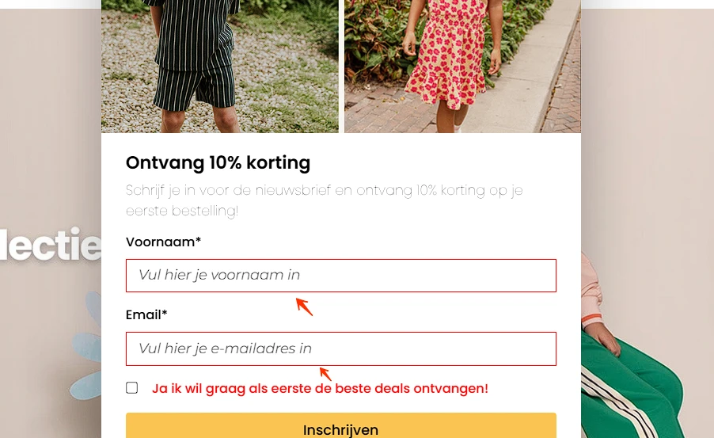
In dit dialoogvenster bestaat de foutmelding in het formulier alleen uit een verandering van de randkleur van het invoerveld.
Dit is niet toegankelijk voor bezoekers die de kleur helemaal niet kunnen zien of die kleurenblind zijn.
Oplossing
Zorg ervoor dat informatie niet alleen met kleur wordt overgedragen. Gebruik daarnaast nog andere manieren om fouten of ontbrekende informatie door te geven, bijvoorbeeld met tekst of iconen.
#155 - "Ontvang 10% korting": Foutmeldingen zijn onvoldoende
In dit dialoogvenster worden na het verzenden van het formulier met ongeldige of onvolledige invoer geen tekstuele foutmeldingen weergegeven die de gebruiker informeren over de gedetecteerde fouten.
Dit succescriterium vereist dat wanneer een invoerfout automatisch wordt gedetecteerd, het foutieve item wordt aangeduid en de fout in tekst aan de gebruiker wordt beschreven.
Oplossing
Geef duidelijke tekstuele foutmeldingen die het foutieve veld aanduiden en het probleem beschrijven.
#156 - "Ontvang 10% korting": Bezoekers die inzoomen tot 200% (400%) kunnen niet meer alle functies gebruiken
Wanneer de website wordt bekeken op een schermresolutie van 1280 bij 1024 pixels en ingezoomd tot 200% (400%), is een deel van dit dialoogvenster niet zichtbaar en niet bedienbaar.
Oplossing
Zorg ervoor dat alles nog werkt als een bezoeker inzoomt tot 200% (400%) op een scherm van 1280 bij 1024 pixels.
Over dit onderzoek
Leeswijzer
Onze rapporten zijn anders. Bij het bespreken van de gevonden problemen volgen wij niet de structuur van de norm, maar die van jouw website of app. Hierdoor kun je gewoon per pagina of scherm aan de slag gaan. Wel zo makkelijk! Je vindt verderop een overzicht van alle pagina’s met problemen.
We geven je bij elk gevonden issue een paar voorbeelden, maar niet een complete lijst. Controleer zelf of het probleem ook nog op andere plekken voorkomt. Zie het rapport als een leidraad.
Gebruikte norm
Dit onderzoek laat zien in hoeverre de website op dit moment voldoet aan WCAG 2.2, niveau A en AA. WCAG staat voor Web Content Accessibility Guidelines. Dit is de internationale norm voor digitale toegankelijkheid. De Europese norm EN 301 549 bevat alle eisen van WCAG op niveau A en AA.
In dit rapport hebben we korte beschrijvingen van de succescriteria uit de norm opgenomen, met een algemene uitleg erbij. Wil je ze helemaal lezen? Bekijk dan de documentatie van WCAG.
Gebruikte onderzoeksmethode
We gebruiken de onderzoeksmethode WCAG-EM van het W3C. Het proces ziet er als volgt uit:
vaststellen wat binnen en buiten scope valt
vaststellen welke technologieën zijn gebruikt
steekproef (sample) samenstellen
steekproef onderzoeken
gevonden issues beschrijven
Het grootste deel van het onderzoek doen we met de hand. Voor een deel van de toegankelijkheidseisen gebruiken we automatische tools als ondersteuning, zoals axe-core en Chrome Developer Tools.
Belangrijk om te weten
Dit rapport helpt je om de toegankelijkheid van je website te verbeteren. Maar let op: het is geen definitieve, volledige lijst van alle aanwezige toegankelijkheidsproblemen. Dat zit zo:
Het is een steekproef
Ten eerste is het onderzoek gebaseerd op een steekproef. Die is op een betrouwbare manier genomen, en de meeste problemen zullen daardoor zeker aan het licht komen. Toch kan een probleem net buiten de steekproef vallen. Bij een volgend onderzoek kan het wel ontdekt worden.
Op basis van falsificatie
We beoordelen vanuit het principe van falsificatie. Dat houdt in dat we proberen te bewijzen dat iets niet waar is, in plaats van te bevestigen dat het klopt. ‘Voldoet’ betekent daarom dat we geen reden hebben gevonden om een punt af te keuren. Maar als we later wél een reden vinden, kan het alsnog worden afgekeurd.
Voortschrijdend inzicht
Het komt voor dat de beoordeling van een succescriterium op detailniveau verandert. De norm beschrijft namelijk niet élk mogelijk scenario. Samen met andere onderzoeksbureaus overleggen we hoe we met bepaalde situaties omgaan. Zo kan iets dat nu wordt afgekeurd, soms bij een volgend onderzoek worden goedgekeurd en andersom.
Oplossen leidt tot nieuw probleem
Ten slotte kan het gebeuren dat bij het oplossen van een probleem onbedoeld een nieuw toegankelijkheidsprobleem ontstaat. Dat komt dan bij een volgend onderzoek pas naar voren.
Hoe werkt dit rapport?
Bevindingen bekijken en filteren
Alle gevonden toegankelijkheidsproblemen staan onder Gevonden problemen. Je kunt de bevindingen filteren op:
Impact (Groot, Medium, Klein, Advies) — hoe ernstig is het probleem voor de gebruiker?
Type (Content, Techniek) — moet de inhoud of de techniek worden aangepast?
Status (Open, Opgelost) — welke problemen zijn al verholpen?
Voortgang bijhouden
Je kunt je voortgang op twee manieren bijhouden:
CSV-export — exporteer alle bevindingen als CSV-bestand en laad het in een (online) spreadsheet om met je team samen te werken.
Jira-export — exporteer alle bevindingen als Jira-compatibel CSV-bestand. Importeer het via Jira > Issues > Import issues from CSV. Bevindingen worden aangemaakt als bugs met prioriteit op basis van impact.
Registreer in de browser — activeer deze optie om per bevinding bij te houden of het is opgelost. Je voortgang wordt opgeslagen in je browser. Niemand anders kan je resultaat zien. Let op: de voortgang is gekoppeld aan je browser. Als je een andere browser of een ander apparaat gebruikt, begint de telling opnieuw.
Plan van aanpak — download een geprioriteerd plan van aanpak om de gevonden problemen stap voor stap op te lossen. Dit is beschikbaar bij audits vanaf maart 2026.
Link naar een specifieke bevinding delen
Bij elke bevinding verschijnt een link-icoon wanneer je er met de muis overheen gaat. Klik op dit icoon om de directe link naar die bevinding te kopiëren. Je kunt deze link plakken in een e-mail of chatbericht, bijvoorbeeld om een vraag te stellen aan Proper Access over een specifiek punt.